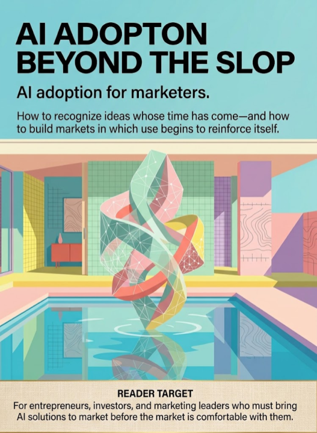

MARKETINGUL ȘI FIZICA SOCIALĂ A ADOPTĂRII IA
Adoptarea IA pentru specialiștii în marketing.
Cum să recunoaștem ideile al căror timp a sosit și cum să construim piețe în care utilizarea începe să se consolideze singură.
Pentru antreprenori, investitori și lideri de marketing care trebuie să aducă soluții IA pe piață înainte ca piața să se simtă confortabil cu ele.
MANUSCRIS DE CERCETARE ȘI STRATEGIE · 23 AUGUST 2026
Toate drepturile rezervate.
Drepturile de publicare KDP aparțin Outfinity SRL (Iași, România). Disponibilă gratuit la ScriptaHub.com.
Această lucrare a fost creată sub egida ScriptaHub, în cadrul a două programe de cercetare interconectate, unul dedicat inteligenței artificiale, iar celălalt outfinitismului, ambele conduse de Sînică Alboaie. Pentru a explora în detaliu felul în care aceste două programe se intersectează și se susțin reciproc, invităm cititorii să viziteze pagina Outfinity Venture Studio la www.outfinity.ch.
Deși modelele lingvistice de inteligență artificială au fost folosite pentru a sprijini generarea textului, filosofia de bază, structura tematică și abordarea analitică provin exclusiv din deceniile de studiu dedicat ale autorului asupra fenomenelor sociale, tehnologiilor sociale și tehnologiilor avansate propriu-zise, rezultate din diverse proiecte de cercetare europene și autofinanțate. Recent, în cadrul proiectului de cercetare ScriptaHub, am studiat aprofundat literatura generată de IA și verificarea sa automată prin abordări neurosimbolice; toate cărțile gratuite puse la dispoziția publicului fac parte din ansamblul de lucrări pe care îl folosim pentru a testa și populariza cele mai noi idei și tehnologii ale noastre.
Cartea urmărește trecerea de la utilizatorul atipic la o piață care își produce propria permisiune, infrastructură și costuri de schimbare. Capitolele nu sunt o succesiune de sloganuri despre IA, ci un model analitic pentru decizii comerciale luate înaintea consensului.
| Capitol | Întrebarea centrală |
|---|---|
| Prefață | De ce utilitatea privată apare înaintea legitimității publice |
| 1. Adoptarea nu este o opinie | Cum separăm atenția, încercarea, utilizarea și reorganizarea |
| 2. Utilizatorul atipic | Cine trece primul printr-un produs incomplet |
| 3. Paradoxul conținutului de umplutură | De ce frontiera poate urca în timp ce mediana vizibilă scade |
| 4. Inversarea vizibilității | De ce eșecurile sunt vizibile, iar competența asistată dispare |
| 5. Personalitatea adoptării | Ce trăsături influențează încercarea, utilizarea și adoptarea competentă |
| 6. Paradoxul expertizei | Cine câștigă imediat și cine extrage valoare strategică |
| 7. Pragul permisiunii | De ce utilitatea nu este suficientă |
| 8. Cascadele permisiunii | Cum devine o practică imitabilă social |
| 9. Piața care se învață singură | Cum produc utilizatorii active complementare |
| 10. Datoria de ucenicie | Cum poate productivitatea prezentă să ipotecheze expertiza viitoare |
| Capitol | Întrebarea centrală |
|---|---|
| 11. Curbe S imbricate | De ce „piața IA” este o colecție de micropiețe |
| 12. Radarul inevitabilității | Cum distingem o cascadă de o modă |
| 13. Marketingul permisiunii | Cum vindem un comportament care nu este încă legitim |
| 14. Cimitirul inevitabilității | Cum evităm o profeție care se confirmă singură |
| 15. Ce urmează, 2026–2031 | Predicții falsificabile despre adoptare |
| Epilog | Când tehnologia dispare în infrastructură |
Notă metodologică. Cercetarea și statisticile au fost verificate până la 23 august 2026. Conceptele originale sunt prezentate ca ipoteze de lucru și confruntate cu literatura, nu ca legi deja validate.
O tehnologie importantă intră rareori în societate sub forma prin care va fi recunoscută ulterior. La început apare incompletă, izbitoare și slab înțeleasă. Este folosită de oameni care au motive neobișnuit de puternice să-i tolereze defectele, prezentată prin demonstrații prea perfecte sau prin rezultate atât de slabe încât devin caricaturi și dezbătută comparând promisiunile maximale ale susținătorilor cu cele mai vizibile eșecuri ale începătorilor. Între aceste extreme se dezvoltă însă piața reală: un ansamblu de utilizări private, proceduri improvizate, avantaje locale și justificări sociale care pot transforma în cele din urmă un experiment într-o normă.
Inteligența artificială generativă a intrat exact în această zonă ambiguă. În trei ani, unele estimări agregate indicau o viteză de difuzare fără precedent pentru o tehnologie de consum, în timp ce statisticile oficiale despre întreprinderi arătau încă integrarea operațională ca pe o practică minoritară. Stanford AI Index 2026 estimează că instrumentele generative au ajuns la o adoptare de aproximativ 53 la sută în populație în trei ani. OCDE raportează că, în 2025, peste o treime dintre persoanele din țările membre folosiseră astfel de instrumente, în timp ce doar 20.2 la sută dintre firme declarau utilizarea inteligenței artificiale; decalajul dintre firmele mari și cele mici era enorm, 52 la sută față de 17.4 la sută (Stanford HAI, 2026; OECD, 2026a). Aceste cifre nu sunt contradictorii. Ele măsoară lucruri diferite și dezvăluie chiar subiectul cărții: încercarea unei tehnologii poate deveni aproape obișnuită cu mult înainte ca dependența de ea, integrarea în fluxul de lucru și recunoașterea instituțională să devină normale.
Este tentant să descriem conflictul prezent printr-o simplă opoziție morală. De o parte ar sta pionierii curajoși, capabili să vadă viitorul; de cealaltă, conservatorii care se tem de schimbare și așteaptă aprobarea grupului. Povestea este marketing atrăgător și explicație slabă. Mulți critici ai IA au argumente rezonabile despre fiabilitate, confidențialitate, drepturi de autor, externalizarea verificării, pierderea competențelor și degradarea mediului informațional. Mulți utilizatori timpurii nu sunt vizionari, ci oportuniști, oameni copleșiți de muncă sau consumatori atrași de noutate. Unele produse noi merită respinse. Unele cascade sociale transformă o tehnologie inferioară într-un standard. Iar multe idei al căror timp pare să fi sosit dispar când capitalul ieftin, noutatea și atenția mediatică se retrag.
Cartea pornește totuși de la o intuiție mai precisă. Rezistența față de IA nu este doar o evaluare a performanței tehnice. Ea poate reflecta un decalaj între utilitatea privată și permisiunea socială de a folosi tehnologia. Oamenii încearcă un instrument când dificultatea lor este suficient de intensă, autonomia suficient de puternică sau avantajul potențial suficient de mare pentru a justifica riscul. Apoi observă ce fac alții. Învață ce rezultate sunt acceptabile, ce trebuie ascuns, ce poate fi recunoscut și ce devine sigur pentru reputație. Când în jurul utilizării apar proceduri, exemple, roluri profesionale, standarde, instrumente complementare și manageri care legitimează, fiecare adoptare reduce costul următoarei adoptări. Piața începe să se învețe singură.
Cartea propune opt concepte care organizează fenomenul. Principiul Utilizatorului Atipic explică de ce utilizatorii inițiali sunt selectați din situații neobișnuite și nu reprezintă piața viitoare. Paradoxul Conținutului de Umplutură explică de ce frontiera calității poate urca în timp ce calitatea medie a artefactelor vizibile scade. Inversarea Vizibilității arată de ce eșecurile IA sunt etichetate și publice, în timp ce utilizările competente se dizolvă în rezultatul final sau rămân ascunse. Pragul Permisiunii separă utilitatea tehnică de legitimitatea socială. Cascada Permisiunii explică momentul în care fiecare utilizator nou reduce riscul perceput de următorul. Paradoxul Expertizei distinge între cei care primesc cel mai mare câștig imediat și cei capabili să extragă cea mai mare valoare strategică. Datoria de Ucenicie numește costul acumulat când organizațiile automatizează munca prin care viitorii experți deveneau experți. Radarul Inevitabilității transformă aceste observații într-un instrument analitic pentru antreprenori, investitori și specialiști în marketing.
Tabelul 1 · Contribuții teoretice centrale
| Concept | Ipoteză de lucru |
|---|---|
| Principiul Utilizatorului Atipic | Utilizatorii inițiali sunt selectați prin nevoie, autonomie sau resurse atipice; nu sunt copii ale viitoarei majorități. |
| Concept | Ipoteză de lucru |
|---|---|
| Paradoxul Conținutului de Umplutură | Frontiera calității poate urca în timp ce calitatea mediană a artefactelor vizibile scade. |
| Inversarea Vizibilității | Eșecurile sunt publice și etichetate; utilizările competente sunt absorbite sau ascunse. |
| Pragul Permisiunii | Adoptarea profundă necesită dovezi, control, legitimitate și siguranță identitară. |
| Cascada Permisiunii | Fiecare adoptare relevantă reduce costul social și operațional al următoarei. |
| Paradoxul Expertizei | Începătorii pot câștiga cel mai mult local; experții pot extrage cel mai mult strategic. |
| Datoria de Ucenicie | Automatizarea prezentului se poate împrumuta din formarea competenței viitoare. |
| Radarul Inevitabilității | Semnale că utilizarea începe să-și producă propriile condiții de continuare. |
Aceste concepte sunt contribuții teoretice ale cărții, nu constatări deja validate sub aceste denumiri de literatura științifică. Sunt construite sintetizând domenii distincte: difuzarea inovațiilor, acceptarea tehnologiei, influența socială, aversiunea față de algoritmi, psihologia identității profesionale și cercetarea despre productivitate, învățare și active complementare. Fiecare concept va fi tratat ca ipoteză utilă, nu ca etichetă menită să închidă discuția. Unde dovezile susțin intuiția, vor fi precizate limitele contextuale. Unde o contrazic, contradicția va rămâne. O carte despre recunoașterea momentului unei idei nu poate fi credibilă dacă transformă fiecare semnal în confirmare.
Publicul principal este alcătuit din oameni care trebuie să acționeze înainte ca dovezile să devină confortabile: fondatori care aleg o piață, investitori care încearcă să distingă infrastructura viitoare de moda trimestrului, specialiști în marketing care trebuie să vândă un comportament nou și lideri care decid dacă introducerea IA va produce capacitate sau doar activitate. Pentru ei, întrebarea relevantă nu este dacă „IA este bună” sau dacă „IA va câștiga”. Întrebarea mai dificilă este aceasta: unde, pentru cine și în ce condiții începe o utilizare să se consolideze singură, permițând ca ceea ce pare excentric astăzi să devină mâine o cerință implicită?
Răspunsul nu se găsește în numărul conturilor create sau în volumul conținutului publicat. O mulțime produce zgomot; o piață produce complementarități. O tehnologie începe să devină inevitabilă când utilizarea ei repetată creează procese, competențe, date, standarde, reputație, costuri de schimbare și motive pentru alți actori să construiască în jurul ei. Acesta este obiectul real al cărții: nu entuziasmul, ci mecanica prin care o posibilitate tehnică dobândește infrastructură socială.
Nota metodologică este importantă. Cercetarea a fost verificată până la 23 august 2026. Au fost preferate articolele evaluate colegial, experimentele randomizate, studiile de teren, metaanalizele, statisticile oficiale și rapoartele instituționale cu metode explicite. Studiile recente despre IA sunt adesea limitate la o profesie, un model, o organizație sau măsurători auto-raportate; generalizarea necesită, așadar, prudență. Cifrele adoptării diferă deoarece unele surse măsoară orice utilizare, altele utilizarea frecventă, furnizarea organizațională, integrarea într-o funcție sau utilizarea oricărei forme de IA. În loc să forțeze aceste definiții într-o uniformitate artificială, cartea le folosește pentru a separa etapele adoptării.
Cartea nu prezice că fiecare formă actuală de IA va deveni indispensabilă. Prezice ceva mai restrâns: legitimitatea se poate inversa înainte ca dezbaterea morală să se încheie. Organizațiile vor judeca utilizarea IA după caracterul verificabil, sigur și justificat economic al procesului. IA încetează atunci să fie o identitate și devine infrastructură.
Dezbaterile despre inteligența artificială confundă frecvent patru fenomene distincte: atenția, încercarea, utilizarea repetată și reorganizarea muncii. O persoană poate discuta despre IA în fiecare zi fără s-o folosească. Aceeași persoană poate crea un cont, produce câteva texte și abandona instrumentul. Cineva poate folosi un asistent general în fiecare săptămână fără a schimba vreun proces important. Sau o persoană poate ajunge în punctul în care munca, produsul și avantajul competitiv sunt proiectate în jurul capacităților IA. Toate aceste stări apar în statistici sub eticheta „adoptare”, deși semnificațiile lor economice sunt radical diferite.
Această confuzie alimentează două erori simetrice. Entuziaștii tratează numărul mare de experimente ca dovadă că transformarea instituțională este deja completă. Scepticii observă că productivitatea agregată, profiturile și organizarea muncii nu s-au schimbat proporțional cu entuziasmul și conchid că tehnologia este în principal spectacol. Dovezile disponibile în 2026 sugerează o interpretare mai subtilă. Utilizarea individuală s-a extins rapid, în timp ce utilizarea organizațională profundă a rămas mult în urmă. În februarie 2026, Gallup a constatat că jumătate dintre angajații americani foloseau IA în rolul lor cel puțin de câteva ori pe an, 28 la sută o foloseau de câteva ori pe săptămână sau mai mult, iar 13 la sută zilnic. Totuși, doar 41 la sută spuneau că organizația integrase instrumente IA pentru a îmbunătăți practicile, iar dovezile reproiectării fundamentale a muncii rămâneau limitate (Gallup, 2026a). În State of the Global Workplace 2026, 65 la sută dintre angajații organizațiilor care implementaseră IA raportau efecte pozitive asupra productivității personale, dar doar 12 la sută erau ferm de acord că IA transformase felul în care se lucra în organizație (Gallup, 2026b).
Pentru un antreprenor, diferența dintre utilizare și transformare este esențială. Primul nivel poate produce creștere rapidă a numărului de utilizatori și venituri temporare. Al doilea creează bugete recurente, integrare, date proprietare și costuri de schimbare. Un produs poate fi viral fără a deveni infrastructură; poate fi infrastructură într-o nișă fără a fi viral; sau poate trece de la una la alta când comportamentul individual forțează organizația să recunoască o practică deja răspândită. Microsoft a documentat o formă timpurie a acestei tranziții în 2024: 78 la sută dintre utilizatorii IA la locul de muncă își aduceau propriile instrumente, iar comportamentul traversa generațiile. În același timp, 52 la sută ezitau să dezvăluie utilizarea IA pentru sarcini importante, iar 53 la sută se temeau că aceasta i-ar face să pară înlocuibili (Microsoft, 2024). Piața exista înainte ca instituția să-i acorde permisiunea.
Adoptarea ar trebui, prin urmare, înțeleasă ca o scară a dependenței și legitimității, nu ca o alegere binară. La bază se află expunerea: persoana știe că tehnologia există și îi poate descrie promisiunea. Urmează încercarea, de obicei ieftină și reversibilă. Mai sus apare utilizarea repetată pentru sarcini periferice. Tehnologia intră apoi în activități importante, dar poate rămâne ascunsă, neoficială sau slab guvernată. Integrarea autentică începe când sunt reproiectate procesele, rolurile și evaluarea calității. Abia în etapa finală neutilizarea devine o abatere care cere justificare. Aceste trepte nu sunt doar etape temporale; indivizii, echipele și industriile pot rămâne blocate între ele ani întregi.
Tabelul 2 · Scara reală a adoptării
| Etapă | Semnificație economică |
|---|---|
| Atenție | Categoria intră în vocabular fără a schimba comportamentul. |
| Încercare | Utilizatorul testează ieftin și reversibil. |
| Utilizare repetată | Instrumentul rezolvă recurent sarcini periferice. |
| Utilizare importantă | Intră în sarcini cu consecințe, adesea încă ascuns sau neguvernat. |
| Integrare | Fluxul de lucru, datele, rolurile și evaluarea calității sunt reproiectate. |
| Instituționalizare | Practica primește politici, buget, responsabilitate și standarde. |
| Normalizare | Neutilizarea începe să ceară justificare. |
În marketing, primele trei trepte sunt relativ ușor de cumpărat. O interfață accesibilă, o încercare gratuită și o demonstrație spectaculoasă pot genera experimente.
Treptele superioare necesită un produs diferit și un alt fel de dovezi. Utilizatorul trebuie să știe când un rezultat este suficient de bun, cine răspunde pentru o eroare, cum intră datele și unde ajung, cum poate fi corectat sistemul, ce se întâmplă când modelul se schimbă și dacă avantajul persistă odată ce concurenții obțin acces la aceeași capacitate. Unde costurile verificării depășesc timpul economisit, „adoptarea” poate doar muta efortul de la creator la destinatar. Fenomenul numit workslop descrie conținut aparent finalizat care transferă colegilor munca de a-i descoperi lipsa de substanță. Dovezile comerciale existente sunt încă prea timpurii pentru concluzii ample, dar semnalul strategic este clar: volumul generat nu echivalează cu valoarea creată.
O piață sănătoasă a IA se măsoară nu doar prin rapiditatea cu care utilizatorii generează ceva, ci și prin costul redus al stabilirii faptului că rezultatul merită folosit. Costul producției scade spectaculos; costurile selecției, verificării și răspunderii pot rămâne constante sau chiar crește. Această asimetrie explică de ce unele categorii vor fi dominate de modele generale, în timp ce altele creează valoare în jurul provenienței, controlului, auditului și expertizei locale. Pentru fondatori, oportunitatea nu este întotdeauna modelul care produce mai mult, ci sistemul care transformă abundența în decizie.
Cercetarea tehnologiilor de uz general explică efectele organizaționale întârziate. Brynjolfsson, Rock și Syverson numesc aceasta curba J a productivității: tehnologiile noi necesită inițial investiții greu de observat în reproiectarea proceselor, capital uman, produse, modele de afaceri și management. Productivitatea măsurată poate întârzia până când organizațiile învață să exploateze aceste active intangibile. Dovezile OCDE indică ceva similar: firmele care folosesc IA tind să fie mai productive, dar câștigurile sunt asociate infrastructurii digitale, competențelor TIC și altor active complementare, nu doar accesului la un model (Brynjolfsson, Rock, and Syverson, 2021; Calvino and Fontanelli, 2023; OECD, 2024).
Eșecul aparent al proiectelor IA trebuie, prin urmare, interpretat atent. Uneori produsul nu rezolvă nicio problemă relevantă; alteori a fost instalat un model fără sistemul social care îl face util. Organizațiile pot cumpăra licențe în timp ce recompensează comportament incompatibil, pot cere viteză în timp ce măsoară volumul documentelor, pot încuraja experimentarea pedepsind prima eroare sau pot cere transparență făcând utilizatorii să se teamă de înlocuire. Rezultatul nu este rezistență irațională, ci proiectare instituțională incoerentă.
Gallup oferă un indiciu empiric puternic despre rolul acelei proiectări. În organizațiile americane care implementaseră IA, utilizarea frecventă era mult mai probabilă când instrumentele erau integrate în sistemele existente, 88 la sută față de 55 la sută, și când managerul susținea activ utilizarea, 78 la sută față de 44 la sută. Totuși, mai puțin de o treime dintre angajați credeau că managerul le oferea un asemenea sprijin (Gallup, 2026c). Accesul este o proprietate a software-ului; permisiunea este o proprietate a organizației. Marketingul B2B care le confundă va supraestima inevitabil capacitatea demonstrației de a produce schimbare.
În întreprinderile mici și mijlocii, nevoia pare să joace un rol aparte. Un sondaj OCDE în șapte țări a constatat utilizarea IA generative în 31 la sută dintre IMM-uri. Dintre utilizatori, 65 la sută raportau performanță îmbunătățită a angajaților, o treime raportau volum de muncă redus, iar 39 la sută dintre firmele confruntate cu deficit de competențe spuneau că IA ajutase la compensare. Totuși, 57 la sută dintre neutilizatori considerau tehnologia nepotrivită activității lor, aproximativ jumătate invocau riscuri juridice sau de confidențialitate ori competențe lipsă, iar foarte puține firme interziseseră complet utilizarea (OECD, 2025a). Rezistența nu este în primul rând ură față de IA. Este o combinație de relevanță insuficient demonstrată, risc neabsorbit și incapacitate de integrare.
Această concluzie are o consecință directă pentru strategia de piață. Segmentarea în „pro-IA” și „anti-IA” este aproape inutilă. Cineva care critică public IA poate fi un utilizator privat intensiv. Un entuziast poate produce multe demonstrații și nicio dependență economică. O organizație care cumpără mii de licențe poate să nu schimbe nimic important. Piața ar trebui segmentată după intensitatea problemei, frecvența sarcinii, costul erorii, observabilitatea rezultatului, competența de verificare, puterea decizională și existența activelor complementare.
Adoptarea este reversibilă: utilizatorii pot reveni la metode anterioare, restrânge instrumentul la sarcini înguste sau schimba furnizorii fără a schimba felul în care lucrează. Utilizarea impusă poate produce penetrare ridicată și retenție fragilă; o comunitate voluntară mică, având rezultate verificabile, poate fi o bază mai puternică pentru o cascadă. Măsurați dacă utilizarea reorganizează munca, creează active durabile și supraviețuiește eșecului. Adoptarea relevantă este o investiție pe care utilizatorul nu mai vrea s-o piardă.
Primul utilizator al unei tehnologii nu este o miniatură a pieței sale viitoare. De obicei, primul utilizator se află într-o situație suficient de neobișnuită pentru a accepta un produs incomplet, o reputație incertă și un cost de învățare pe care majoritatea nu îl consideră justificat. Această selecție creează o eroare clasică de marketing: fondatorii își privesc utilizatorii timpurii și cred că au descoperit profilul clientului majoritar, când au descoperit de fapt condițiile extreme în care problema devine mai puternică decât fricțiunea.
Principiul Utilizatorului Atipic susține că adoptarea timpurie apare când cel puțin una dintre trei variabile este excepțională: dificultatea resimțită, autonomia decizională sau valoarea potențială a avantajului. O a patra variabilă, adesea ignorată, este capacitatea de a absorbi pierderea. Un cercetător copleșit poate tolera halucinații deoarece alternativa este ratarea termenului. Un programator care poate valida independent codul poate experimenta fără aprobarea colegilor. Un consultant poate investi ore în tehnologie deoarece un mic spor de productivitate se multiplică în zeci de proiecte. O corporație poate testa sute de soluții nu fiindcă vede viitorul mai clar, ci fiindcă își permite să greșească de nouăzeci și nouă de ori.
Această idee este apropiată de teoria utilizatorilor avansați a lui Eric von Hippel. Utilizatorii avansați resimt nevoi puternice care vor deveni răspândite luni sau ani mai târziu și au un stimulent puternic să găsească singuri soluții. Tocmai pentru că trăiesc înaintea pieței, pot servi drept laboratoare pentru anticiparea cererii și drept
accentul pe caracterul atipic ca mecanism de selecție. Nevoia anticipativă este doar o formă. Altele includ independența față de normele profesionale, apetitul pentru risc, resursele excedentare și presiunea extremă.
În IA, utilizatorul încolțit contează mai mult decât recunoaște retorica inovației. Microsoft a raportat că 68 la sută dintre respondenți aveau dificultăți cu ritmul și
aduceau deja instrumente IA personale la locul de muncă înainte ca organizațiile să ofere politici și infrastructură adecvate (Microsoft, 2024). OCDE a constatat că, pentru aproximativ o treime dintre IMM-urile care foloseau IA generativă, tehnologia reducea volumul de muncă al angajaților sau proprietarilor; firmele o foloseau și pentru a compensa deficitul de competențe ori de forță de muncă (OECD, 2025a). Nevoia nu produce automat adoptare, dar poate coborî pragul la care riscurile devin acceptabile.
Această categorie nu ar trebui romantizată. Disperarea poate declanșa încercarea și, simultan, împiedica învățarea. Oamenii sub presiune au mai puțin timp să verifice, să proiecteze un proces și să distingă o soluție robustă de o scurtătură periculoasă. Pentru un produs IA, utilizatorul copleșit este simultan clientul ideal și un mediu de eșec. Valoarea este percepută imediat, dar acest utilizator poate produce exact rezultatele care susțin reputația de conținut de umplutură. Marketingul responsabil nu ar trebui să exploateze vulnerabilitatea; ar trebui să reducă explicit costul verificării și să împiedice asistența să devină datorie cognitivă.
A doua categorie este utilizatorul suveran: persoana care consideră evaluarea personală un motiv suficient pentru a începe. Această persoană nu este neapărat mai inteligentă sau mai corectă decât grupul. Utilizatorul poate fi deschis la noutate, poate avea o nevoie puternică de autonomie sau poate supraestima calitatea propriei judecăți. Ceea ce îl distinge este disponibilitatea de a separa adevărul instrumental al unei tehnologii de reputația ei actuală. O asemenea persoană nu întreabă mai întâi dacă profesia aprobă, ci dacă instrumentul ajută într-un caz concret. În medii cu norme puternice, tehnologia poate fi folosită clandestin, creând o piață invizibilă.
A treia categorie este utilizatorul de arbitraj. Această persoană vede intervalul dintre disponibilitatea generală a unei capacități și distribuția inegală a competenței necesare utilizării ei. Modelele pot fi accesibile tuturor în timp ce avantajul rămâne nedemocratizat: unii oameni știu să formuleze problema, să construiască un flux de lucru, să conecteze date, să verifice și să transforme rezultatul într-un produs. Arbitrajul nu durează pentru totdeauna. Tocmai această temporalitate atrage freelanceri, agenții, consultanți și startupuri. Ei nu pariază neapărat pe superioritatea permanentă a unei tehnologii, ci pe faptul că piața învață mai lent decât pot ei executa.
A patra categorie este experimentatorul înzestrat cu opțiuni. Organizațiile bogate, laboratoarele, fondatorii finanțați și profesioniștii cu timp la discreție pot testa tehnologii fără nevoie urgentă. Paradoxal, pot deveni pionieri tocmai pentru că problema nu îi constrânge. Au permisiunea de a eșua. Această categorie corectează ipoteza că utilizatorii timpurii sunt în principal disperați sau rebeli. Uneori privilegiul precede curajul: ceea ce pare viziune este capacitatea de a absorbi costul încercării.
Tabelul 3 · Arhetipurile adoptatorului timpuriu
| Arhetip | Mecanismul adoptării |
|---|---|
| Adoptator încolțit | Adoptă deoarece volumul, complexitatea sau lipsa resurselor au făcut vechiul proces nesustenabil. |
| Adoptator suveran | Experimentează fără permisiunea grupului și acceptă riscul judecății personale. |
| Adoptator de arbitraj | Caută avantaj în intervalul dintre disponibilizarea unei tehnologii și învățarea utilizării ei competente de către piață. |
| Experimentator cu resurse | Își permite timp, bani și eșec înainte ca produsul să se maturizeze. |
| Legitimator | Nu este neapărat primul; este actorul credibil care face practica imitabilă social. |
Aceste tipuri nu sunt personalități stabile. Aceeași persoană poate fi încolțită într-un proiect, suverană într-un domeniu cunoscut, conformistă acolo unde riscul reputațional este mare și experimentator bine finanțat într-o organizație. În segmentarea pieței, contextul bate demografia. Un fondator care identifică o comunitate de profesioniști copleșiți de documentație poate găsi adoptare mai rapidă decât unul care caută generic „oameni deschiși la IA”. Un specialist în marketing care observă o activitate frecventă cu feedback rapid și rezultat verificabil poate găsi nucleul unei cascade chiar și într-o industrie aparent conservatoare.
Principiul generează și o predicție importantă: ceea ce atrage utilizatorii inițiali poate respinge piața de masă. Un produs configurabil, puternic și imprevizibil îi oferă utilizatorului suveran control; pentru majoritate, aceeași flexibilitate înseamnă responsabilitate și risc. Un mesaj despre depășirea limitelor profesionale îl entuziasmează pe arbitrageur; pentru angajatul obișnuit, poate suna ca o amenințare la adresa postului. Comunitatea informală în care pionierii schimbă prompturi și improvizații creează energie, dar cumpărătorul organizațional cere guvernanță, trasabilitate și rezultate repetabile. Trecerea prăpastiei nu înseamnă doar deplasarea de la un segment mic la unul mare; înseamnă schimbarea motivului pentru care produsul este cumpărat.
Rogers distinge inovatori, adoptatori timpurii, majoritate timpurie, majoritate târzie și întârziați. O nuanță adesea pierdută în discursul startupurilor este că inovatorii și adoptatorii timpurii nu joacă același rol. Inovatorii tolerează riscul și complexitatea. Adoptatorii timpurii respectați acționează ca interpreți și legitimatori într-o comunitate: reduc incertitudinea arătând că tehnologia poate fi integrată în norme și obiective recunoscute (Rogers, 2003). În termenii cărții, utilizatorii atipici descoperă posibilitatea; legitimatorii o fac imitabilă social.
Pentru IA, această separare explică de ce comunitățile tehnice pot părea cu ani înaintea unei profesii fără a o transforma. Un inginer poate demonstra o capacitate, dar nu poate decide ce constituie o eroare acceptabilă într-un spital, cabinet de avocatură sau instituție publică. Tranziția necesită oameni cu autoritate locală care înțeleg atât instrumentul, cât și normele domeniului. Cei mai importanți clienți timpurii nu sunt, așadar, întotdeauna cei care folosesc cel mai mult produsul, ci cei ale căror rezultate pot fi imitate fără pierdere de statut.
Aici apare conceptul de capital al permisiunii. Un medic respectat, un partener senior, un profesor admirat sau o instituție recunoscută poate transforma utilizarea din abatere în practică prudentă. Capitalul lor reputațional absoarbe o parte din riscul perceput de alții. Invers, un influencer foarte vizibil, fără autoritate în comunitatea țintă, poate crește notorietatea consolidând însă impresia că produsul aparține unei subculturi superficiale. Marketingul unei tehnologii controversate necesită alegerea nu doar a publicului, ci și a unui purtător legitim al mesajului.
Principiul Utilizatorului Atipic poate fi folosit ca metodă de cercetare a pieței. În loc să întrebăm piața medie ce dorește de la o categorie pe care încă nu o înțelege, căutăm oameni pentru care viitorul este deja o problemă prezentă. Studiem nu doar ce instrument folosesc, ci și ce costuri acceptă, ce improvizează, ascund, verifică și unde renunță. Separăm apoi componentele susceptibile să devină generale de adaptările produse de situația lor extremă. Nevoia lor poate anticipa piața; toleranța lor la fricțiune aproape sigur nu o anticipează.
Această metodă protejează și împotriva unei capcane. Utilizatorii inițiali pot cere funcții sofisticate care fac produsul mai greu de adoptat pentru ceilalți. Pot aprecia controlul granular, limbajul tehnic și libertatea de configurare deoarece stăpânirea complexității face parte din identitatea lor. Dacă firma confundă competența pionierilor cu standardul viitor, construiește un produs admirat și rar folosit. Scopul nu este generalizarea utilizatorului atipic, ci generalizarea avantajului descoperit de acel utilizator, eliminând progresiv caracterul atipic necesar obținerii lui.
Primul semnal că timpul unei idei se apropie nu este, așadar, aprobarea oamenilor obișnuiți. Este faptul că grupuri diferite de utilizatori atipici ajung independent la aceeași nevoie și încep să construiască soluții similare. Când cei copleșiți, autonomi, utilizatorii de arbitraj și experimentatorii bine finanțați converg asupra aceleiași capacități, avem mai mult decât entuziasm. Avem presiune din mai multe direcții. Piața nu există încă deplin, dar problema a început să-și caute propria infrastructură.
Cea mai eficace critică populară a inteligenței artificiale generative nu este că modelele nu pot produce nimic valoros, ci că fac prea ieftină producerea lucrurilor care nu merită atenție. Slop a devenit numele informal pentru texte, imagini, videoclipuri și documente care par terminate, dar sunt sărace în intenție, verificare sau substanță. Termenul surprinde o experiență reală: utilizatorii nu întâlnesc frontiera capacității; întâlnesc distribuția rezultatelor publicate. Când costul publicării se apropie de zero, acea distribuție este inundată de încercări care anterior nu ar fi trecut pragul de efort necesar pentru a exista.
Paradoxul Conținutului de Umplutură începe aici: o tehnologie poate crește simultan cea mai înaltă calitate accesibilă și reduce calitatea medie a artefactelor vizibile asociate ei. Nu este o contradicție. Frontiera este stabilită de oameni care combină modelul cu cunoaștere, selecție, iterație și editare. Media vizibilă este modelată de numărul total de rezultate și pragul publicării. Dacă o tehnologie permite unui expert să producă un rezultat cu 20 la sută mai bun, dar permite unui milion de oameni să publice zece rezultate neverificate în loc de unul, percepția publică va fi dominată de a doua schimbare.
Un experiment publicat în Science Advances oferă o versiune controlată a acestei tensiuni. Doshi și Hauser au constatat că accesul la idei generate de IA creștea evaluările creativității, calității scrisului și plăcerii lecturii pentru povestiri, cu beneficii mai mari pentru participanții mai puțin creativi. În același timp, povestirile asistate de IA deveneau mai asemănătoare, reducând diversitatea colectivă (Doshi and Hauser, 2024). La nivel individual, utilizarea era rațională; la nivelul ecosistemului, convergența putea reduce valoarea varietății. Aceasta nu dovedește că tot conținutul IA devine uniform, dar arată că îmbunătățirea mediei individuale și degradarea diversității colective pot coexista.
Conținutul de umplutură nu este definit doar prin calitate scăzută. Este și o problemă de distribuție a efortului. Un document generat rapid poate părea suficient de bun pentru a fi trimis, dar îl poate obliga pe destinatar să-i identifice presupunerile, să repete verificarea și să descopere dacă există o idee reală în spatele limbajului. Autorul economisește timp transferând costul cititorului. În organizații, această externalizare poate transforma productivitatea locală în neproductivitate sistemică. Cercetarea comercială BetterUp Labs și Stanford Social Media Lab a popularizat termenul workslop pentru asemenea rezultate; fiind un studiu prin sondaj, nu o măsurare independentă a productivității, cifrele sale ar trebui tratate prudent. Conceptul rămâne util: tehnologia poate muta munca, nu o poate elimina.
Pentru marketing, acest transfer schimbă promisiunea produsului. Dacă mesajul este „creează de zece ori mai mult”, compania poate stimula exact comportamentul care degradează încrederea în categorie. Un utilizator produce mai multe prezentări, e-mailuri, specificații și alternative, dar colegii au capacitate finită de evaluare. Când volumul crește mai repede decât calitatea selecției, fiecare artefact nou concurează nu doar cu produse rivale, ci și cu răbdarea destinatarului. Abundența devine o taxă pe atenție.
Acea taxă creează o oportunitate distinctă. Pe măsură ce producția sintetică devine mai ieftină, valoarea migrează către mecanisme care demonstrează proveniență, intenție, responsabilitate și calitate. Editarea, evaluarea, reputația, auditul, selecția și comunitățile cu acces controlat nu sunt doar accesorii. Devin infrastructura care face abundența tolerabilă. O piață împotriva conținutului de umplutură nu se opune generării; impune costuri de admitere. Produsele valoroase vor reduce nu doar timpul creației, ci și timpul necesar celorlalți pentru a avea încredere în rezultat.
Prepublicarea „Measuring AI Slop in Text” încearcă să transforme termenul într-o taxonomie evaluabilă și pornește de la absența unei definiții convenite. Autorii identifică dimensiuni interpretabile ale conținutului de umplutură și problema recunoașterii clișeelor structurale sau lexicale asociate textului generat (Shaib et al., 2025). Faptul că domeniul abia începe să construiască instrumente de măsurare contează. Critica publică a precedat operaționalizarea științifică. Pentru antreprenori, „slop” este, așadar, atât semnal de piață, cât și categorie instabilă: clienții resimt costul înainte de a-l putea specifica în cerințele de achiziție.
Paradoxul are o a doua componentă. Pe măsură ce instrumentele se îmbunătățesc, conținutul de umplutură poate deveni mai greu de detectat, nu mai rar. Un text fluent fără substanță consumă mai multă încredere decât unul evident slab. O eroare într-o propoziție stângace activează vigilența; aceeași eroare într-un raport elegant poate intra într-o decizie. Frontiera stilistică avansează mai repede decât frontiera răspunderii. Calitatea de suprafață nu mai poate servi, așadar, ca indicator suficient al efortului, adevărului sau competenței.
Aversiunea față de IA poate fi, în consecință, un răspuns rațional la degradarea semnalelor. Profesioniștii au învățat să evalueze munca prin indicii indirecte: coerență, structură, vocabular, detalii și timpul aparent investit. Generarea artificială slăbește legătura dintre aceste indicii și substanța din spatele lor. Când oricine poate produce o formă convingătoare, destinatarul trebuie să ceară alte dovezi. Criticul nu apără neapărat romantismul muncii manuale; poate apăra un sistem de încredere ale cărui semnale au fost compromise.
Această observație limitează teza că acuzațiile de conținut de umplutură sunt doar un pretext folosit de oameni care așteaptă consensul. Uneori sunt un mecanism defensiv împotriva unor costuri reale. Conținutul de umplutură poate întârzia și adoptarea de calitate prin contaminarea reputației categoriei. Un manager care primește trei rapoarte superficiale generate de IA nu va distinge automat utilizarea incompetentă de o limită tehnologică. Va ridica pragul permisiunii pentru întreaga echipă. Fiecare utilizator care externalizează verificarea consumă capitalul reputațional al utilizatorilor care folosesc atent instrumentul.
Critica are și ea o limită. Scăderea calității medii a rezultatelor publice nu înseamnă că frontiera este lipsită de importanță economică. Piețele nu plătesc întotdeauna pentru medie. Un studio poate folosi IA pentru a explora mii de alternative și a publica una. Un cercetător poate genera zece ipoteze și păstra doar ceea ce rezistă verificării. Un cabinet de avocatură poate folosi un model pentru căutare și structură fără a livra clientului răspunsul brut. În asemenea cazuri, abundența rămâne internă, iar selecția protejează exteriorul. Conținutul de umplutură devine periculos când filtrul dispare, nu când apar alternativele.
Rezultă o distincție de produs între generatoare și sisteme editoriale. Un generator optimizează capacitatea de a produce. Un sistem editorial optimizează probabilitatea ca ceea ce părăsește procesul să merite văzut. Prima categorie a dominat faza inițială deoarece demonstrația este imediată. A doua va deveni mai importantă pe măsură ce organizațiile descoperă că materialul produs nu este rezultatul obținut, iar viteza locală nu este performanță integrală. În piețe cu un cost ridicat al erorii, un sistem care refuză, cere dovezi și păstrează trasabilitatea poate fi mai valoros decât modelul care răspunde cel mai fluent.
Tabelul 4 · Unde migrează valoarea într-o piață a abundenței
| De la → la | Consecință pentru produs |
|---|---|
| Generare → selecție | Avantajul se mută de la producerea alternativelor la alegerea rezultatului care merită văzut. |
| De la → la | Consecință pentru produs |
|---|---|
| Volum → atenție | Costul rar devine timpul destinatarului, nu al generatorului. |
| Fluență → dovezi | Forma persuasivă trebuie înlocuită de surse, teste și trasabilitate. |
| Răspuns → pistă de audit | Relevanța organizațională depinde de cine a aprobat rezultatul și cum poate fi verificat. |
| Originalitate declarată → proveniență | Piața va plăti pentru origine și răspundere. |
| Viteză locală → rezultat integral | Economiile contează numai când nu transferă muncă în aval. |
Paradoxul Conținutului de Umplutură oferă și un instrument de analiză concurențială. Când o categorie este inundată de rezultate similare, diferențierea doar prin producție devine nesustenabilă. Valoarea se poate muta către date proprietare, acces la distribuție, autoritate editorială, integrarea în procese reale sau capacitatea de a demonstra efectul. O agenție care promite „conținut IA” intră într-o cursă către cost marginal zero. O platformă capabilă să arate de ce o afirmație este susținută, cine a aprobat-o și cum a performat pe piață construiește un activ mai greu de copiat.
În acest sens, conținutul de umplutură poate accelera maturizarea pieței. Provoacă răspunsul instituțional care lipsea: standarde de calitate, reguli de atribuire, filtre, certificări și noi convenții reputaționale. Asemenea spamului, nu va dispărea prin indignare, ci prin infrastructură. Infrastructura apare când costul poluării devine suficient de ridicat pentru ca selecția să devină un produs.
Timpul unei idei este semnalat nu de dispariția conținutului de umplutură, ci de o economie care învață să-l filtreze.
Publicul nu observă uniform utilizarea IA. Rezultatele slabe sunt adesea vizibile, etichetate și ușor de atribuit tehnologiei. Rezultatele bune sunt editate, integrate într-un proces sau prezentate ca muncă obișnuită. Această asimetrie produce o inversare a vizibilității: cu cât utilizarea este mai matură, cu atât urmele ei pot deveni mai puțin evidente, în timp ce utilizarea incompetentă devine reprezentarea publică a categoriei.
Un text generic publicat fără revizuire își dezvăluie originea prin formule repetate și structură previzibilă. O analiză în care IA a asistat căutarea, a propus obiecții și a accelerat rescrierea nu poartă neapărat o semnătură distinctă. Codul acceptat după testare, un document revizuit de un avocat și o ipoteză abandonată înaintea unui experiment dispar în produsul final. Contribuția tehnologiei a fost reală, dar nu este contabilizată de public. În schimb, imaginea absurdă, citarea inventată și e-mailul fără sens circulă tocmai fiindcă sunt eșecuri memorabile.
Microsoft a documentat un motiv suplimentar al ascunderii. În 2024, peste jumătate dintre utilizatorii IA la locul de muncă ezitau să recunoască folosirea instrumentului pentru sarcini importante și se temeau că dezvăluirea i-ar putea face să pară înlocuibili (Microsoft, 2024). Când recunoașterea are un cost reputațional, piața reală trece în subteran. Managerii văd mai puțină utilizare competentă decât există în realitate și mai multe probleme decât bune practici, deoarece oamenii raportează erori care îi afectează, nu conversații private care i-au ajutat.
Inversarea complică cercetarea de piață. Întrebarea „folosiți IA?” poate primi răspunsuri deformate de rușine, ambiguitate și diferențe de definiție. Un angajat poate considera autocorectarea, căutarea semantică sau rezumarea încorporată în software drept funcții normale, nu IA. Altul poate numi IA fiecare interacțiune cu un robot conversațional. Un profesionist poate nega utilizarea deoarece produsul final a fost verificat și rescris personal. Altcineva poate exagera utilizarea pentru a semnala modernitate. Datele auto-raportate măsoară atât comportamentul, cât și identitatea pe care respondenții doresc să o proiecteze.
Pentru un startup, piața ascunsă este atât oportunitate, cât și risc. Oportunitatea apare când oamenii improvizează cu instrumente generale, folosesc conturi personale sau construiesc proceduri clandestine pentru o nevoie pe care organizația nu a recunoscut-o.
Acest comportament indică dificultate și disponibilitate de adoptare. Riscul apare când fondatorul confundă utilizarea clandestină cu cererea organizațională. Ceea ce este util individual poate fi inacceptabil juridic, imposibil de auditat sau incompatibil cu responsabilitatea instituțională. Un produs comercial trebuie să transforme practica ascunsă în practică legitimă, nu doar să facă ascunderea mai comodă.
Aceasta este o sursă importantă de creare a categoriilor. Compania vinde nu doar capacitate, ci o traducere între două regimuri: de la utilizare privată la utilizare guvernată; de la răspuns la dovezi; de la un cont personal la un proces auditat; de la „m-a ajutat” la „putem demonstra de ce este acceptabil”. În multe domenii, modelul de bază este deja disponibil. Valoarea se mută către produsul care elimină motivele ascunderii.
Inversarea Vizibilității explică și de ce percepția publică se poate schimba brusc. Mult timp, utilizarea competentă se acumulează fără un semnal explicit. Oamenii dezvoltă practici, firmele testează intern, managerii observă avantaje, iar furnizorii construiesc integrări. Când o instituție respectată recunoaște formal comportamentul, ceea ce părea marginal devine dintr-odată ubicuu. Schimbarea nu s-a produs în ziua anunțului; anunțul a făcut vizibilă o schimbare anterioară.
Acest mecanism seamănă cu o tranziție de fază socială. Sub prag, utilizatorii individuali cred că sunt excepții și își ascund comportamentul. Deasupra lui, fiecare descoperă că mulți alții făceau același lucru, iar costul recunoașterii scade. Pentru marketing, momentul este critic. Înaintea lui, mesajul ar trebui să ofere siguranță, control și comunități discrete. După el, mesajul se mută către standardizare, interoperabilitate și avantajul de a nu rămâne în urmă.
Există și o inversare morală. Dacă utilizarea valoroasă este invizibilă, susținătorii pot invoca mereu beneficii neobservabile pentru a respinge critica vizibilă. „Cele mai bune cazuri sunt secrete” nu este o dovadă. Cartea tratează inversarea ca ipoteză despre selecția observațiilor, nu ca scuză universală. Ea trebuie testată prin date de utilizare, studii de teren și rezultate măsurabile. Fără acestea, invizibilitatea poate ascunde doar absența valorii.
Un semnal mai puternic este distanța dintre utilizarea personală și infrastructura oficială. Când angajații își aduc propriile instrumente la scară, apar proceduri informale, iar managerii nu pot explica politica organizațională, există o piață latentă pentru integrare și guvernanță. Când utilizarea rămâne ocazională, nu produce retenție și nu creează improvizație, piața poate fi doar curiozitate. Distincția apare în sacrificiile utilizatorilor: timp investit în învățare, bani plătiți personal, riscuri acceptate și procese reconstruite.
Inversarea are consecințe pentru poziționare. Un produs IA care se laudă excesiv cu identitatea sa tehnologică poate crește costul reputațional al clientului. Pentru un segment matur, IA ar trebui să fie vizibilă ca funcție de control și invizibilă ca spectacol. Clientul cumpără un rezultat profesional, nu participarea la o mișcare culturală. În alte segmente, identitatea de pionier rămâne
comunitate.
Rezultă o regulă de marketing: observați ce parte a valorii vor utilizatorii să afișeze și ce parte vor să ascundă. Un designer poate afișa viteza explorării, dar nu vrea ca lucrarea finală să fie percepută ca automată. Un avocat poate aprecia cercetarea accelerată, dar trebuie să demonstreze răspundere umană. Un antreprenor poate promova eficiența echipei, dar nu vrea să sugereze că produsul este un înveliș superficial peste un model comun. Mesajele care ignoră această economie a atribuirii creează rezistență chiar și când utilitatea este recunoscută.
IA va deveni treptat inseparabilă de software, pe măsură ce funcțiile generative intră în editoare, căutare, analiză, instrumente de colaborare și procese automate. Eticheta își va pierde puterea explicativă; piețele se vor împărți după rezultat, risc și integrare. O tehnologie câștigă deplin când nu mai trebuie anunțată, iar categoria dispare în infrastructura pe care a schimbat-o.
Când un produs nou întâlnește rezistență, specialiștii în marketing caută adesea o explicație psihologică simplă. Unii oameni par neobișnuit de dispuși să exploreze instrumente incerte, în timp ce alții cer dovezi concrete, rutine stabile și garanții clare înainte de a-și schimba felul de lucru. Distincția este relevantă comercial, dar nu ar trebui transformată într-o piesă moralizatoare între pionieri imaginativi și conservatori timizi. Personalitatea poate influența prima apropiere de IA; nu determină singură cine va deveni un utilizator capabil, loial sau profitabil.
Cele mai utile studii pentru această carte sunt cele care conectează direct trăsături măsurabile la acceptarea, utilizarea, implicarea sau performanța în raport cu IA. Chiar și în această literatură mai restrânsă, patru rezultate trebuie păstrate separat: disponibilitatea de a încerca, intenția declarată de utilizare, comportamentul repetat și utilizarea competentă. O persoană poate testa entuziast fiecare model nou fără să integreze vreunul în muncă serioasă. Alta poate rezista luni întregi, apoi adopta un singur sistem verificat și reorganiza în jurul lui un flux de lucru întreg. Pentru analiza pieței, personalitatea este, așadar, un modificator al traseului adoptării, nu un înlocuitor al observării comportamentului.
O metaanaliză interculturală din 2026 a sintetizat 44 de studii, 187 de mărimi ale efectului și 14,594 de studenți care foloseau instrumente de scriere asistată de IA. Deschiderea a arătat cea mai puternică asociere pozitivă cu acceptarea, urmată de conștiinciozitate și extraversiune; agreabilitatea a avut o asociere pozitivă mai mică, iar neuroticismul s-a asociat negativ cu acceptarea. Efectele au variat și în funcție de contextul cultural (Li, 2026). Rezultatul este orientativ util, dar limitele sale contează. Majoritatea eșantioanelor proveneau din învățământul superior, multe rezultate priveau constructe de acceptare, nu comportament durabil, și doar o minoritate a studiilor incluse foloseau indicatori comportamentali. Un fondator ar trebui să citească dovezile ca pe o hartă a tendințelor, nu ca pe o licență de a profila clienții drept tipuri psihologice fixe.
Un studiu cu 1,016 studenți a produs un tipar similar, dar nu identic. Deschiderea, conștiinciozitatea și extraversiunea erau legate pozitiv de utilizarea educațională a IA generative; neuroticismul era legat negativ, agreabilitatea nu era semnificativă, iar deschiderea a apărut ca cel mai puternic predictor în analiza autorilor prin rețele neuronale (Arpaci, Kuşci, and Gibreel, 2025). Aceasta consolidează ideea că interesul pentru noutate contează în etapa încercării. Sugerează și că utilizatorii disciplinați, orientați spre obiective, pot adopta odată ce IA este prezentată ca instrument structurat pentru finalizarea muncii, nu ca divertisment.
Dovezile orientate spre locul de muncă sunt mai puține și mai puțin ordonate. Într-un studiu-pilot cu 62 de participanți care efectuau sarcini asemănătoare celor de marketing, Kovbasiuk și colegii au găsit interacțiuni privind conștiinciozitatea și agreabilitatea, calitatea sarcinii și intențiile de utilizare viitoare, dar nu tiparul simplu în care deschiderea prezice fiecare formă de adoptare timpurie (Kovbasiuk et al., 2025). Eșantionul era prea mic pentru afirmații ample de segmentare, dar chiar această limitare este instructivă. Trăsăturile pot afecta diferit momente diferite ale parcursului: explorarea, persistența, colaborarea cu sistemul, evaluarea rezultatului și disponibilitatea de a reveni nu sunt același comportament.
Un experiment intercultural cu 639 de participanți din Regatul Unit și contexte arabe a testat cei cinci mari factori de personalitate împreună cu nevoia de cogniție și locul controlului, în scenarii care variau autonomia IA și caracterul critic al sarcinii. Personalitatea conta, dar proiectarea sistemului, contextul sarcinii și cultura contau adesea mai mult; efectele nevoii de cogniție, intuiției și locului controlului erau mai restrânse și dependente de scenariu (Rahman et al., 2026). Pentru specialiștii în marketing, aceasta este o constatare importantă strategic. Acceptarea nu depinde doar de cine este persoana. Depinde de relația pe care produsul o construiește între acea persoană, sarcină și mașină.
Interpretările practice ar trebui să rămână probabiliste. Deschiderea poate crește experimentarea, dar experimentarea nu este retenție. Conștiinciozitatea poate favoriza sisteme care oferă structură, fiabilitate și progres vizibil, dar aceeași trăsătură poate produce respingere când rezultatele sunt greu de verificat. Extraversiunea poate susține învățarea socială și difuzarea condusă de colegi, deși nu este necesară pentru utilizare individuală susținută. Neuroticismul sau anxietatea mai ridicate pot crește evitarea sistemelor incerte, dar anxietatea poate produce și dependență când IA este promovată ca sursă de reasigurare. Agreabilitatea poate facilita interacțiunea cooperantă cu un asistent într-un context și preferința pentru ajutor uman în altul. Aceeași trăsătură poate susține comportamente opuse când proiectarea produsului schimbă riscul perceput.
Constructele învecinate pot fi mai apropiate de comportamentul pe care o piață trebuie efectiv să-l prezică. Caracterul inovator personal în tehnologia informației descrie disponibilitatea individului de a încerca tehnologii noi într-un anumit domeniu (Agarwal and Prasad, 1998). Autoeficacitatea în raport cu IA privește convingerea utilizatorilor că pot opera sistemul, îl pot evalua și se pot recupera după erorile lui. Nevoia de cogniție influențează dacă oamenii vor să inspecteze raționamentul, presupunerile și dovezile, nu doar să primească un răspuns. Locul controlului influențează dacă automatizarea este resimțită ca extindere a capacității de acțiune sau ca transfer al autorității. Aceste constructe nu împart piața în triburi permanente; schimbă probabilitatea încercării, persistenței și delegării în condiții specifice.
Tabelul 5 · Trăsături de personalitate și răspunsuri plauzibile ale pieței
| Variabilă | Implicație pentru marketing și proiectare |
|---|---|
| Deschidere și curiozitate | Explorarea, noutatea și posibilitatea rezonează; riscul este încercarea fără retenție. |
| Nevoie de cogniție | Cere surse, comparații, ipoteze și transparență utilă, nu doar răspunsuri fluente. |
| Locul controlului | Acceptarea crește când IA este resimțită ca extindere a capacității de acțiune, nu ca preluare a deciziei. |
| Autoeficacitate | Introducerea în utilizare trebuie să creeze un sentiment legitim de competență și control. |
| Toleranță la ambiguitate | Modelează răbdarea cu frontiera neuniformă și rezultatele inegale. |
| Conștiinciozitate și sensibilitate la risc | Favorizează predictibilitatea, verificarea și limitele explicite. |
| Sensibilitate la dovada socială | Cere confirmare din partea colegilor relevanți și norme locale clare. |
Unitatea adoptării este adesea perechea persoană–sarcină, nu persoana în abstract. Un medic poate experimenta îndrăzneț cu căutări în literatura de diagnostic și poate rămâne conservator în documentația clinică. Un avocat poate adopta IA pentru identificarea probelor, refuzând însă argumentația juridică generată. Un inginer o poate folosi zilnic pentru cod și o poate evita în managementul oamenilor. Chiar și caracterul inovator personal este specific domeniului: același client poate fi adoptator timpuriu într-un flux de lucru și utilizator din majoritatea târzie în altul. Cercetarea de piață care întreabă doar dacă cineva este
„pro-IA” sau „anti-IA” elimină tocmai variația de care strategia produsului are nevoie.
Cartea propune, prin urmare, conceptul de profil al permisiunii. Profilul nu încearcă să diagnosticheze personalitatea. Descrie condițiile în care un segment își acordă permisiunea de a folosi produsul. Pentru un grup, permisiunea apare când există libertatea de a explora și obține rezultate surprinzătoare. Pentru altul, apare când un expert respectat validează procesul. Pentru altul, când sistemul păstrează aprobarea umană, inspectabilitatea și o urmă decizională. Pentru altul, când neutilizarea începe să amenințe statutul profesional. Un profil al permisiunii este dinamic, contextual și direct utilizabil prin proiectare, demonstrații, distribuție, instruire și poziționare.
Aceasta corectează o eroare frecventă în marketingul tehnologiei: încercarea de a convinge persoana greșită cu mai multe informații. Rezistența poate să nu provină din necunoașterea beneficiului. Poate proveni dintr-o amenințare la adresa autonomiei, identității, competenței sau datoriei profesionale. O demonstrație mai spectaculoasă poate intensifica amenințarea. Pentru un segment orientat spre control, mesajul potrivit nu este
„privește ce poate face singură”, ci „vezi cât de precis poți defini ce are voie să facă”.
Pentru un segment sensibil la statut, mesajul nu este
„nu mai trebuie să știi”, ci „expertiza ta devine mecanismul care face sistemul fiabil”.
Pentru un segment orientat spre explorare, guvernanța excesivă poate distruge atracția inițială.
Implicația comercială este încurajatoare: personalitatea se schimbă lent, în timp ce controlul, competența, siguranța și experiența pot fi proiectate. Produsele pot oferi moduri diferite de capacitate de acțiune, de la sugestie la execuție; pot furniza
pentru a furniza dovadă socială. Scopul nu este manipularea unei trăsături. Este eliminarea unei bariere care contează disproporționat pentru un anumit segment. Un produs care îi face pe utilizatorii nesiguri să se simtă capabili își extinde piața adresabilă. Unul care îi expune repetat pe utilizatori la propria lipsă de competență nu face decât să-și confirme entuziaștii naturali.
Personalitatea contează, dar nu încheie vânzarea. Trăsăturile modelează prima mișcare; experiența, potrivirea sarcinii, permisiunea organizațională și arhitectura produsului modelează traiectoria. Marketingul matur nu clasifică clienții ca fiind curajoși sau temători. Descoperă ce dovezi, control și context fac adoptarea rațională pentru fiecare piață.
Una dintre cele mai importante intuiții despre piața IA pare contradictorie la început. Oamenii experimentați pot extrage mai multă valoare dintr-un model deoarece știu ce să întrebe, recunosc erori și pot integra rezultatul într-o decizie reală. Aceiași oameni pot fi mai reticenți deoarece au proceduri consolidate, reputații de protejat și un cost mai mare al schimbării. Începătorii adoptă uneori mai ușor, dar nu au criteriile necesare pentru a distinge un răspuns plauzibil de unul corect. Cine beneficiază, așadar, cel mai mult?
Dovezile nu susțin un verdict unic deoarece „beneficiu” poate însemna lucruri diferite. Experimentele pe sarcini bine delimitate arată adesea o comprimare a distribuției performanței: lucrătorii mai slabi sau mai puțin experimentați câștigă cel mai mult procentual. Într-un studiu de teren cu 5,172 de agenți de asistență pentru clienți, accesul la asistență generativă a crescut productivitatea cu aproximativ 15 la sută, cele mai mari efecte apărând la angajații mai puțin experimentați și cu performanțe mai slabe. Limbajul lor a devenit mai asemănător celui al celor mai buni agenți, iar retenția lucrătorilor noi s-a îmbunătățit. Pentru agenții foarte experimentați, câștigurile de viteză erau mici, iar urmarea sugestiilor sistemului putea reduce marginal calitatea conversației (Brynjolfsson, Li, and Raymond, 2025).
Un experiment cu 453 de profesioniști care efectuau sarcini de scriere a constatat o reducere medie a timpului de 40 la sută și o creștere a calității de 18 la sută; participanții cu performanță inițială mai slabă s-au îmbunătățit mai mult (Noy and Zhang, 2023). Aceste constatări contrazic ipoteza simplă că IA îi ajută în primul rând pe seniori. Pentru sarcini repetabile cu feedback relativ clar și exemple puternice în datele de antrenare ale modelului, IA poate acționa ca un compresor de experiență: îi oferă începătorului o aproximare a practicilor care altfel ar necesita luni sau ani pentru a fi dobândite.
Comprimarea nu este însă același lucru cu expertiza. Un studiu cu 758 de consultanți BCG arată de ce. În optsprezece sarcini aflate în interiorul capacităților modelului, utilizatorii IA au finalizat mai multe sarcini, mai repede și cu o calitate mai ridicată. Într-o sarcină managerială complexă aflată dincolo de frontieră, utilizatorii IA aveau o probabilitate cu 19 la sută mai mică de a ajunge la răspunsul corect. Proza lor putea fi mai convingătoare chiar și când recomandarea era greșită (Dell’Acqua et al., 2026). De-a lungul unei frontiere tehnologice neuniforme, valoarea provine nu doar din utilizarea instrumentului, ci și din recunoașterea punctului în care încetează să fie demn de încredere.
O metaanaliză preregistrată a 106 experimente și 370 de mărimi ale efectului arată și ea de ce „om plus IA” nu ar trebui tratat ca superioritate automată. În medie, combinațiile performau sub componenta mai bună care lucra singură; pierderile erau mai frecvente în sarcini decizionale, iar câștigurile în munca creativă. Când omul era mai bun decât IA, combinația avea șanse mai mari să ajute; când IA era deja mai bună, intervenția umană putea degrada rezultatul (Vaccaro, Almaatouq, and Malone, 2024). Implicația pentru piață nu este „om în buclă” ca slogan, ci proiectarea explicită a buclei: cine generează, cine evaluează și unde are fiecare parte un avantaj informațional autentic.
Aceasta este forma precisă a paradoxului expertizei propus de carte. Începătorul poate primi cel mai mare câștig imediat de performanță deoarece punctul de plecare este mai jos și rutinele codificate pot fi împrumutate. Expertul poate primi cel mai mare efect strategic de multiplicare deoarece poate formula probleme mai bune, conecta domenii, identifica excepții și accepta sau respinge rezultatul. Între ei se află o zonă periculoasă: utilizatorul suficient de competent pentru a produce muncă elaborată, dar insuficient de competent pentru a observa când sistemul și-a depășit frontiera.
Senioritatea adaugă o dimensiune diferită. Nu este sinonimă cu vârsta, expertiza sau performanța. Un manager senior poate avea putere decizională, experiență contextuală și acces la informații, dar puțină competență într-o sarcină tehnică. Un contributor individual poate deține expertiză profundă fără autoritate organizațională. Un angajat mai vârstnic poate fi experimentator tehnologic, în timp ce un tânăr absolvent poate evita IA din motive etice sau anxietate privind cariera. Cercetarea de piață care tratează „oamenii seniori” ca pe o categorie omogenă amestecă patru variabile: experiența, vârsta, statutul și puterea de a reproiecta procesul.
Datele de utilizare sugerează totuși un efect al vârstei. Un studiu reprezentativ american despre adoptarea IA generative la locul de muncă a constatat în 2024 că aproximativ 34 la sută dintre lucrătorii sub patruzeci de ani o foloseau, comparativ cu 17 la sută dintre cei de cincizeci de ani și peste (Bick, Blandin, and Deming, 2024). Datele OCDE despre utilizarea individuală în 2025 arată o diferență și mai mare între grupele de vârstă, deși acele statistici includ și persoane din afara pieței muncii (OECD, 2026a). Asemenea cifre confirmă un decalaj de adoptare, nu cauza lui. Accesul la roluri digitale, compoziția sarcinilor, cultura organizațională, timpul pentru învățare și expunerea anterioară pot explica o parte substanțială.
Rezistența profesioniștilor experimentați nu ar trebui respinsă drept rigiditate. Un mod de lucru consolidat este capital. Conține rutine, relații, criterii și responsabilități care nu apar într-un tutorial. Schimbarea devalorizează temporar acel capital. Costul nu este doar timpul necesar învățării unui instrument, ci revenirea de la competență inconștientă la stângăcie vizibilă. Pentru cineva al cărui statut se sprijină pe fluență și control, această regresie locală este costisitoare reputațional. Produsul nou îi cere să devină din nou începător, adesea în fața oamenilor a căror muncă o conduce.
Cercetarea amenințării identității profesionale susține această explicație, dar o și corectează. Într-un studiu cu studenți la medicină și profesioniști, amenințările la adresa capacităților și recunoașterii profesionale preziceau rezistența față de IA. Totuși, studenții raportau amenințări și rezistență mai puternice decât profesioniștii, nu invers (Jussupow, Spohrer, and Heinzl, 2022). Oamenii aflați încă în construirea identității profesionale pot resimți IA ca anularea unei investiții înainte ca aceasta să se consolideze. Seniorii au mai mult capital de protejat, dar pot avea și mai multă siguranță, autonomie și capacitate de a-și redefini rolul.
Un studiu din 2025 cu 635 de angajați chinezi peste patruzeci și cinci de ani adaugă o nuanță relevantă. Adoptarea IA era asociată atât cu amenințarea identitară, cât și cu transferul intergenerațional mai mare de cunoaștere, iar autoeficacitatea digitală reducea amenințarea. Dovezile erau transversale și auto-raportate într-un context cultural specific, deci nu stabilesc cauzalitate. Chiar și așa, indică o posibilitate comercială importantă: utilizatorul experimentat nu trebuie tratat doar ca beneficiar sau obstacol, ci ca purtător de cunoaștere pe care produsul o poate ajuta să circule (Guo and Wei, 2025).
Acesta este un rezultat comercial crucial. Mesajul „IA îi eliberează pe experți de munca de rutină” îl poate atrage pe angajatul senior, amenințându-l pe junior dacă munca de rutină este tocmai calea de intrare în profesie. Mesajul „oricine poate performa ca un expert” atrage utilizatori fără acces la expertiză, dar atacă direct statutul expertului și promite mai mult decât poate garanta sistemul. Același slogan poate accelera o categorie și bloca alta.
Tabelul 6 · Paradoxul Expertizei pe segmente
| Segment | Câștig probabil și risc dominant |
|---|---|
| Junior sau începător | Câștig mare în sarcini standardizate; risc ridicat de încredere excesivă și învățare superficială. |
| Expert individual | Câștig strategic prin formulare, verificare și tratarea excepțiilor; necesită control granular. |
| Manager senior | Poate reproiecta procesul și distribui permisiune chiar fără expertiză tehnică profundă. |
| Angajat mai vârstnic | Nu este sinonim cu senioritatea; adoptarea depinde de autoeficacitate, rol, sarcină și identitate. |
| Organizație | Poate distribui expertiză erodând simultan filiera care produce expertiză nouă. |
Pentru analiza pieței, separarea câștigurilor de productivitate de câștigurile de autoritate este mai utilă decât împărțirea clienților după vârstă. Juniorii cumpără adesea acces la un standard, feedback rapid și eliberare de anxietatea paginii albe. Experții cumpără acoperire, explorare, comprimarea informației și capacitatea de a testa mai multe alternative. Managerii cumpără consecvență, vizibilitate și controlul procesului. Organizația cumpără transferul practicilor și dependență redusă de câțiva oameni, dar riscă să erodeze însăși sursa expertizei viitoare.
Proiectarea produsului ar trebui să reflecte aceste diferențe. Un mod pentru începători are nevoie de îndrumare, explicații, exerciții și mecanisme care descurajează acceptarea automată. Un mod pentru experți are nevoie de control granular, citări, comparație între alternative, integrare cu date proprietare și capacitatea de a impune criterii. Un mod managerial are nevoie de politici, metrici, roluri și urme ale aprobărilor. A pune aceeași casetă de chat în fața tuturor și a numi asta transformare înseamnă a confunda accesul cu adoptarea.
Paradoxul expertizei creează și o problemă de măsurare. Dacă evaluarea ia în calcul doar timpul economisit, începătorii pot părea câștigătorii absoluți. Dacă ia în calcul valoarea deciziei, evitarea erorilor rare, noutatea și efectele asupra altor oameni, experții pot avea un efect de multiplicare mult mai mare. Un director general care folosește IA pentru a formula o întrebare mai bună poate economisi doar treizeci de minute și totuși crea milioane în valoare. Un angajat junior care generează de zece ori mai multe pagini poate crea volum, nu rezultate. Metricile adoptării trebuie conectate la economia sarcinii, nu la frecvența interacțiunii.
Există și un risc sistemic. Dacă cei mai buni profesioniști urmează tot mai mult sugestiile sistemului, practicile pot deveni mai omogene, iar oferta de exemple cu adevărat noi se poate micșora. Studiul agenților de asistență ridică explicit posibilitatea ca aderarea experților la recomandările IA să reducă contribuțiile originale din care ar putea învăța modelele viitoare (Brynjolfsson, Li, and Raymond, 2025). Piața poate distribui expertiza existentă încetinind producerea expertizei noi. Această tensiune revine în capitolul despre datoria de ucenicie.
Intuiția inițială poate fi, așadar, păstrată într-o formă mai justificabilă. Seniorii și experții nu sunt, în general, nici principalii beneficiari, nici principalii opozanți. Se confruntă cu o structură diferită de beneficii și costuri. Când IA oferă o scurtătură printr-o sarcină standardizată, începătorul câștigă mai mult. Când valoarea depinde de definirea problemei, judecată contextuală și verificare, expertul poate transforma aceeași tehnologie într-un multiplicator superior. Iar când un produs cere renunțarea la identitate, autonomie sau rutină fără compensație clară, rezistența este rațională indiferent de vârstă.
Un produs poate fi util și totuși să rămână nefolosit. Afirmația pare evidentă, dar mare parte din marketingul IA se comportă ca și cum demonstrarea capacității ar trebui să încheie discuția. Modelul scrie, clasifică, rezumă sau propune mai repede decât o persoană; prin urmare, piața ar trebui să adopte. Când adoptarea este lentă, explicația se mută către ignoranța, teama sau inerția clientului. În realitate, utilitatea tehnică este doar o condiție a permisiunii.
Pragul permisiunii este nivelul cumulativ de dovezi, control, legitimitate și siguranță cerut de un individ sau o instituție înainte de a transforma o posibilitate în comportament normal. Nu este identic intenției de utilizare din modelele clasice de acceptare a tehnologiei, deși se construiește pe ele. Technology Acceptance Model a stabilit importanța utilității percepute și a ușurinței utilizării, iar UTAUT a integrat așteptările de performanță, așteptările de efort, influența socială și condițiile facilitatoare (Davis, 1989; Venkatesh et al., 2003). IA adaugă o problemă mai acută: produsul poate participa la producerea judecății, nu doar la executarea unei comenzi. Utilizatorul trebuie, prin urmare, să acorde permisiunea delegării
Permisiunea are cel puțin patru surse. Prima este epistemică: pot avea încredere că rezultatul este suficient de bun pentru această sarcină? A doua este operațională: sistemul se integrează fără a transfera doar costul către verificare, securitate sau reparație? A treia este instituțională: am voie să-l folosesc și se poate demonstra conformitatea? A patra ține de identitate: utilizarea lui este compatibilă cu înțelegerea mea despre ce înseamnă să fii profesionist? Un produs poate trece primele trei teste și eșua la al patrulea. Poate trece testul identității într-o comunitate de startupuri și eșua la testul juridic într-un spital.
Cercetarea aversiunii față de algoritmi arată că oamenii pot penaliza erorile sistemului mai sever decât erorile umane. Dietvorst, Simmons și Massey au constatat că participanții evitau prognozele algoritmice după ce observau algoritmul greșind, chiar dacă îl văzuseră și depășind o persoană (2015). Literatura nu susține însă o aversiune universală. În mai multe experimente, Logg, Minson și Moore au constatat că oamenii acordau uneori mai multă greutate sfaturilor despre care credeau că provin de la un algoritm, mai ales când nu se considerau experți (2019). Piețele oscilează între apreciere și aversiune în funcție de sarcină, experiență, miză, control și vizibilitatea erorii.
Această oscilație explică de ce transparența singură nu rezolvă automat problema. Utilizatorii nu cer întotdeauna să înțeleagă mecanismul intern; cer capacitatea de a gestiona consecința. Un rezultat clasic arată că permisiunea de a modifica fie și o mică parte a unei prognoze algoritmice crește disponibilitatea de utilizare, satisfacția și performanța (Dietvorst, Simmons, and Massey, 2018). O replicare preregistrată din 2025 a confirmat efectul ajustabilității, în timp ce transparența suplimentară nu a produs un efect la fel de clar în acel eșantion (Bohlen et al., 2025). Controlul simbolic poate conta mai mult decât o explicație tehnică extinsă.
Rezultă o regulă de produs: permisiunea este adesea construită prin capacitatea de acțiune. Butonul de aprobare, capacitatea de a cere surse, dreptul de veto, comparația cu o referință și repartizarea clară a responsabilității nu sunt accesorii. Sunt componente ale valorii. Un sistem care promite autonomie maximă poate fi impresionant tehnic și prematur comercial. Pentru multe piețe, produsul optim nu este cel care elimină persoana, ci cel care arată precis unde acea persoană rămâne indispensabilă.
Identitatea profesională ridică pragul într-un mod mai puțin vizibil. IA poate amenința nu doar un post, ci și povestea prin care o persoană își justifică statutul. Dacă un avocat este valoros pentru că scrie, un designer pentru că imaginează, un programator pentru că produce cod și un profesor pentru că explică, o tehnologie care imită aceste rezultate ridică o întrebare existențială înainte să producă un calcul al rentabilității investiției. Studiile amenințării identității profesionale indică faptul că pierderile percepute de capacitate și recunoaștere pot alimenta rezistența (Jussupow, Spohrer, and Heinzl, 2022; Mirbabaie et al., 2022).
Marketingul care ridiculizează acest răspuns agravează problema. Mesajul „IA nu te va înlocui, dar cineva care folosește IA o va face” sună conciliant, dar funcționează și ca amenințare. Cere adoptare sub presiunea degradării statutului și leagă produsul de anxietate. Poate genera încercări, dar și utilizare ascunsă, sabotaj pasiv sau adoptare ceremonială. O strategie mai matură descrie noul rol în termeni pozitivi și verificabili: expertul definește criterii, inspectează excepții, extinde acoperirea și devine responsabilul procesului asistat.
Tabelul 7 · Arhitectura permisiunii
| Forma permisiunii | Întrebarea pe care produsul trebuie să o rezolve |
|---|---|
| Epistemică | Există dovezi că rezultatul este suficient de bun pentru această sarcină? |
| Operațională | Integrarea evită transferul costului către verificare, securitate sau reparație? |
| Instituțională | Există politici, răspundere, audit și un drept clar de utilizare? |
| Identitară | Practica este compatibilă cu statutul și standardele profesionale? |
| Socială | Colegii și managerii relevanți tratează utilizarea ca legitimă? |
Permisiunea are și o componentă colectivă. Un angajat poate considera instrumentul util și totuși refuza să fie primul care îl aplică unei sarcini importante. Angajatul nu știe dacă managerul va recompensa inițiativa sau va conchide că rolul este ușor de automatizat. Datele Microsoft din 2024 surprind această ambiguitate: 52 la sută dintre utilizatorii IA la locul de muncă ezitau să dezvăluie utilizarea în cele mai importante sarcini, iar 53 la sută se temeau să pară înlocuibili (Microsoft, 2024). Permisiunea personală exista; permisiunea reputațională nu.
Managerul este, prin urmare, un distribuitor de legitimitate. Gallup a raportat în 2026 că integrarea în fluxul de lucru și sprijinul managerial erau puternic asociate cu utilizarea frecventă. Angajații care spuneau că managerul susținea activ utilizarea IA aveau o probabilitate de aproximativ 1.7 ori mai mare să o folosească de câteva ori pe săptămână sau mai mult (Gallup, 2026e). Acest rezultat singur nu stabilește cauzalitate, dar sugerează că permisiunea socială locală contează. Instruirea fără claritate managerială poate produce cunoașterea instrumentului fără permisiunea de a-l aplica.
În vânzările organizaționale, unitatea de achiziție nu este doar utilizatorul, ci o coaliție a permisiunii. Sponsorul economic vrea valoare, securitatea vrea limite, departamentul juridic vrea răspundere, managerul vrea control, iar utilizatorul vrea protecție împotriva expunerii. O demonstrație care convinge o funcție poate crește opoziția celorlalte. Fondatorii interpretează adesea entuziasmul utilizatorilor ca dovadă că achizițiile sunt iraționale. În realitate, cele două părți cumpără produse diferite: utilizatorul cumpără capacitate; instituția cumpără o schimbare a regimului său de risc.
Pragul poate fi coborât prin trei mecanisme. Dovada locală arată că produsul funcționează pe date, sarcini și constrângeri apropiate celor ale clientului. Controlul local permite organizației să definească limite, aprobări și responsabilitate. Legitimitatea distribuită furnizează exemple de la actori comparabili și credibili, nu doar mărturii celebre. Niciunul dintre aceste mecanisme nu îi cere utilizatorului să creadă în IA ca idee generală. Cere doar acceptarea unui proces limitat.
Aceasta schimbă felul în care ar trebui construită categoria. Limbajul larg despre inteligență și viitor este util pentru atenție, dar slab pentru trecerea pragului. Cu cât miza sarcinii este mai mare, cu atât promisiunea ar trebui să devină mai restrânsă. „Scriem orice” devine „pregătim o primă versiune cu surse și controale”. „Automatizăm cercetarea” devine „reducem timpul de selecție păstrând pista dovezilor”. „Înlocuim asistența” devine „îi oferim agentului răspunsuri candidate și escaladăm excepțiile”. Restrângerea nu reduce ambiția; construiește permisiunea din care ambiția poate crește.
Pragul nu se deplasează doar prin îmbunătățirea produsului. Poate crește după un scandal, un eșec public sau o schimbare de reglementare. O categorie în creștere rapidă poate pierde legitimitatea mai repede decât capacitatea. Reputația este, prin urmare, un activ comun al furnizorilor. Companiile care externalizează costurile verificării și publică afirmații exagerate nu le fac rău doar propriilor clienți. Ele ridică pragul întregii piețe.
Un semn timpuriu de maturitate este schimbarea întrebărilor clienților. La început, clientul întreabă dacă IA poate face ceva. Apoi dacă poate face suficient de bine. Mai târziu, clientul întreabă cum se integrează, cine răspunde, ce date folosește și cum este măsurat rezultatul. Întrebările târzii sună mai sceptic, dar sunt de fapt semne ale apropierii de cumpărare. Piața nu mai dezbate dacă există capacitatea; negociază condițiile permisiunii.
O idee nu se răspândește doar pentru că oamenii aud despre ea. Informația poate traversa lumea într-o după-amiază, în timp ce comportamentul rămâne neschimbat ani întregi. Pentru a folosi un instrument nou într-o sarcină importantă, o persoană trebuie să absoarbă costuri, să accepte risc și să creadă că experiența altcuiva este relevantă pentru propria situație. Adoptarea este, așadar, mai apropiată de o contagiune complexă decât de transmiterea unui zvon.
Modelul pragurilor al lui Mark Granovetter descrie comportamente în care decizia fiecărui actor depinde de numărul sau proporția celor care au acționat deja. O persoană poate avea prag zero și experimenta fără confirmare; alta intră după ce vede un coleg; alta așteaptă majoritatea; alta nu adoptă aproape niciodată (Granovetter, 1978). Distribuții diferite ale acestor praguri pot produce rezultate colective radical diferite în grupuri care par similare la suprafață. Câțiva indivizi cu prag scăzut nu garantează o cascadă. Trebuie conectați astfel încât comportamentul lor să poată reduce pragurile celor care urmează.
Experimentele lui Damon Centola arată că comportamentele costisitoare sau incerte necesită adesea întărire din surse multiple. Într-o comunitate online de sănătate, adoptarea era mai probabilă când participanții primeau întărire socială de la mai mulți vecini, iar comportamentul se răspândea mai repede și mai departe în rețele grupate decât în rețele aleatorii cu legături la distanță (Centola, 2010). Aceasta inversează intuiția cea mai simplă despre viralitate. Legăturile slabe sunt excelente pentru transportul informației; legăturile redundante pot fi mai bune la legitimarea acțiunii.
IA se potrivește acestui model deoarece rezultatele sunt greu de evaluat din exterior. O postare poate afișa o demonstrație spectaculoasă fără să dezvăluie timpul de pregătire, încercările abandonate sau munca de verificare. Utilizatorii trebuie să vadă mai multe exemple de la oameni pe care îi consideră comparabili. Un medic nu adoptă pentru că un influencer tehnologic declară un model inteligent. Adoptarea apare când colegi respectați demonstrează o utilizare limitată, spitalul definește o politică, iar riscul devine inteligibil. Un avocat nu are nevoie de încă un videoclip viral; are nevoie de dovezi că alți avocați pot păstra confidențialitatea, răspunderea și calitatea.
Cartea numește cascadă a permisiunii procesul în care fiecare adoptare relevantă produce nu doar un utilizator nou, ci și o reducere a costului social, cognitiv sau instituțional înfruntat de următorul. Utilizatorul publică un exemplu, scrie o procedură, instruiește un coleg, convinge un manager, solicită o integrare sau creează un standard. Comportamentul lasă în urmă infrastructură. Odată ce se acumulează suficiente urme, grupul nu mai trebuie convins de la început.
O cascadă a permisiunii nu este același lucru cu un efect de rețea. Un produs are efect de rețea când valoarea sa crește direct cu numărul utilizatorilor. Un editor IA poate deveni mai legitim pe măsură ce adoptarea crește chiar dacă valoarea sa funcțională pentru un utilizator nu depinde direct de prezența altora. Este un efect de legitimare și învățare a pieței, nu neapărat un efect tehnic de rețea. Distincția contează pentru investitori deoarece retorica „efectelor de rețea” este adesea aplicată oricărui produs în creștere.
Insulele dense sunt comunități în care utilizatorii își pot observa reciproc comportamentul, compara rezultatele și transfera practici. Pot fi departamente, profesii, grupuri de cercetare, ecosisteme de startupuri, comunități cu sursă deschisă sau rețele de creatori. Densitatea lor socială permite feedback rapid. Un caz reușit este replicat, un eșec discutat, un flux de lucru rafinat și apare un limbaj comun. Asemenea insule sunt laboratoare de piață mai valoroase decât publicurile mari, eterogene.
Pentru un fondator, întrebarea nu este doar unde există mulți utilizatori potențiali, ci unde pot utilizatorii învăța unii de la alții. O piață de un milion de indivizi izolați poate adopta mai lent decât o comunitate de zece mii în care reputația circulă și exemplele sunt comparabile. Aceasta este puterea nișelor profesionale aparent mici. Pot produce densitate de dovezi, iar densitatea poate coborî pragurile mai repede decât acoperirea publicitară.
Tabelul 8 · Semnale ale unei cascade a permisiunii
| Semnal | Ce indică în piață |
|---|---|
| Confirmări independente | Mai mulți actori relevanți ajung separat la aceeași utilizare. |
| Semnal | Ce indică în piață |
|---|---|
| Șabloane transferate | Procedurile circulă între colegi fără intervenția furnizorului. |
| Legitimare managerială | Timpul de experimentare și erorile controlate devin permise. |
| Sacrificiu voluntar | Utilizatorii investesc bani, date, reputație sau reproiectare. |
| Replicare între echipe | Practica trece dintr-o insulă locală în contexte învecinate. |
| Limbaj instituțional | Apar roluri, politici, bugete, standarde și responsabilități. |
Marketingul pentru o contagiune complexă trebuie să se comporte diferit de marketingul pentru o aplicație aproape lipsită de fricțiune. Optimizarea clicului individual nu este suficientă. Trebuie să creeze confirmări independente și observabile: studii de caz în aceeași profesie, comunități de practică, teste locale de referință, demonstrații între colegi și roluri de promotori interni. Aceasta nu înseamnă fabricarea consensului. Confirmările funcționează tocmai când par autonome și pot include limite, eșecuri și condiții de utilizare.
Managerii funcționează ca noduri cu putere neobișnuită. Influențează nu doar opinia, ci și alocarea timpului, accesului, protecției și recompenselor. Gallup raportează că sprijinul managerial și integrarea în fluxul de lucru sunt asociate cu utilizare mult mai frecventă a IA (Gallup, 2026c). Un manager poate coborî pragul printr-o declarație clară: această utilizare este permisă, timpul de experimentare este legitim, iar eșecurile controlate nu vor fi pedepsite. Un manager poate bloca piața și prin ambiguitate: „inovați, dar nu vă asumați riscuri; folosiți IA, dar răspundeți complet pentru fiecare eroare; economisiți timp, dar păstrați fiecare obligație veche”.
Cascadele pot fi benefice sau perverse. O comunitate poate legitima o practică slabă deoarece nimeni nu vrea să pară rămas în urmă. Demonstrațiile se pot selecta reciproc, iar metricile pot fi schimbate pentru a valida o decizie anterioară. O idee poate deveni standard nu pentru că este superioară, ci pentru că a acumulat suficientă coordonare, capital și complementarități. Cartea nu folosește inevitabilitatea ca sinonim al adevărului sau binelui. O cascadă descrie o dinamică, nu o justificare morală.
Acest avertisment schimbă și verificarea prealabilă a investitorilor. Creșterea generată de presiune executivă, subvenții și contracte promoționale poate imita o cascadă a permisiunii. Un semnal mai puternic este comportamentul voluntar care creează active complementare. Utilizatorii își schimbă procesele, creează șabloane, recomandă produsul în comunități unde reputația lor este în joc și continuă după încheierea stimulentelor. O piață care necesită permanent aceeași subvenție nu și-a coborât pragul; doar l-a plătit temporar.
O altă eroare este căutarea unei singure „prăpastii” în întreaga societate. IA nu traversează o singură separare. Fiecare comunitate are propria distribuție a pragurilor, propriile riscuri și actori legitimi. Programatorii, profesorii, avocații și funcționarii publici pot folosi aceeași familie de modele aflându-se în etape sociale diferite. O campanie care pare târzie într-un ecosistem poate fi prematură în altul.
Cea mai bună strategie este adesea secvențială. Compania intră într-o insulă unde dificultatea este intensă și rezultatul observabil, ajută comunitatea să producă practici și dovezi, apoi folosește acele active pentru a intra într-un segment învecinat. Extinderea apare nu doar prin funcții noi, ci prin transferul legitimității. Referința relevantă nu este „mii de companii folosesc produsul”, ci „organizații cu riscuri și procese ca ale dumneavoastră au stabilit cum să-l folosească”.
Când o cascadă se apropie de prag, limbajul pieței se schimbă. Întrebarea nu mai este „cine a încercat?”, ci „cum faceți?”. Apar convenții, teste de referință, consultanți, locuri de muncă și instrumente auxiliare. Criticii pot rămâne vocali, dar încep să discute modul corect de utilizare, nu dacă utilizarea este posibilă. Acesta este unul dintre cele mai bune indicii că timpul unei idei sosește: opoziția este absorbită în proiectarea instituțională.
O idee nu devine greu de oprit fiindcă i-a convins pe toți. Devine greu de oprit când suficiente insule au construit în jurul ei și fiecare insulă reduce costul traversării pentru următoarea. Ceea ce se răspândește nu mai este doar tehnologia. Permisiunea se răspândește odată cu ea.
Produsele noi sunt adesea descrise ca obiecte terminate care intră într-o piață preexistentă. Echipa construiește, marketingul comunică, iar clientul decide. Pentru tehnologiile de uz general, această imagine este falsă. Produsul și piața se construiesc reciproc. Fiecare implementare descoperă o sarcină, o excepție, o integrare, o regulă și o formă de valoare pe care furnizorul nu le putea cunoaște complet în prealabil. Adoptarea nu doar distribuie produsul; produce cunoașterea necesară pentru a face produsul adoptabil.
Eric von Hippel i-a numit utilizatori avansați pe cei care resimt nevoi intense înainte ca acestea să devină răspândite și au, așadar, un stimulent să improvizeze soluții. Pot funcționa ca laboratoare pentru cererea viitoare deoarece trăiesc astăzi problema pe care piața mai largă o va întâlni ulterior (von Hippel, 1986). Principiul utilizatorului atipic extinde ideea la condițiile sociale ale IA. Utilizatorii timpurii fac mai mult decât să furnizeze cerințe de produs. Tolerează ambiguitatea, inventează procese de verificare, negociază acceptabilitatea și creează vocabularul prin care ceilalți vor înțelege categoria.
Aceste contribuții sunt active complementare. Un model puternic nu este suficient pentru reorganizarea muncii. Sunt necesare și date curate, integrări, roluri, politici, metrici, instruire și reproiectare organizațională. Cercetarea OCDE constată că avantajele de productivitate asociate adoptării IA sunt legate de complementarități precum competențele TIC, infrastructura și utilizarea altor tehnologii digitale (Calvino and Fontanelli, 2023; OECD, 2025b). OECD Skills Outlook 2026 raportează că deficitul de competențe este o barieră centrală și că majoritatea lucrătorilor nu au nevoie atât de expertiză avansată în IA, cât de capacități digitale, de date, manageriale și de rezolvare a problemelor (OECD, 2026b).
De aceea, o tehnologie poate părea revoluționară în demonstrații și dezamăgitoare în productivitatea agregată, în același timp. Teoria curbei J a productivității susține că tehnologiile de uz general necesită investiții costisitoare, greu de măsurat, în capital intangibil complementar. Productivitatea poate părea stagnantă sau chiar mai slabă în timp ce organizațiile reconstruiesc procesele, câștigurile devenind vizibile abia după acumularea acelui capital (Brynjolfsson, Rock, and Syverson, 2021). Pentru IA, prompturile, evaluările, taxonomiile sarcinilor, datele proprietare și noile repartizări ale responsabilității sunt forme de capital organizațional, nu accesorii întâmplătoare.
O piață care se învață singură apare când aceste investiții nu rămân izolate. Furnizorii transformă excepțiile în funcții, consultanții codifică implementarea, comunitățile distribuie practici, iar clienții cer standarde comune. Costul implementării următoare scade. Produsul se îmbunătățește, dar, mai important, mediul devine mai capabil să-l folosească. O tehnologie poate avansa fără un salt spectaculos al modelului de bază dacă ecosistemul reduce suficient fricțiunea din jur.
Procesul creează bucle de feedback pozitiv. Mai mulți utilizatori generează mai multe cazuri; cazurile atrag integrare și capital; integrarea reduce riscul; riscul mai mic atrage clienți mai conservatori; acei clienți cer guvernanță; guvernanța deschide industrii cu miză ridicată. Fiecare etapă schimbă natura pieței. Ceea ce începe ca instrument individual poate deveni infrastructură organizațională, în timp ce criteriul cumpărării trece de la inteligența aparentă la fiabilitatea procesului.
Tabelul 9 · Activele prin care învață o piață
| Activ | Valoare acumulată |
|---|---|
| Hartă a excepțiilor | Probleme reale, cazuri-limită și momente când sistemul trebuie să refuze. |
| Set de evaluare | Exemple și metrici care definesc „suficient de bun” pentru client. |
| Șablon de flux de lucru | Pași, aprobări și escaladări care transformă capacitatea în proces. |
| Schemă de permisiuni | Cine poate vizualiza, genera, aproba și executa. |
| Vocabular comun | Limbaj prin care furnizorul și clientul discută riscul și valoarea. |
| Bibliotecă de integrări | Conexiuni care reduc costul marginal al următoarei implementări. |
Pentru startupuri, pericolul este confundarea lecțiilor utilizatorilor avansați cu cerințele majorității. Utilizatorul atipic acceptă configurare, erori și interfețe dificile deoarece nevoia este excepțională. Piața mai largă nu va accepta aceleași costuri. Un utilizator avansat dezvăluie unde poate exista valoare, nu forma finală a produsului. Echipa trebuie să extragă mecanismul valoros din improvizație și să elimine sacrificiul care îl făcea imposibil pentru toți ceilalți.
Un alt pericol este capturarea de către cei mai vocali utilizatori. Comunitățile timpurii pot cere complexitate, libertate și funcții care le măresc statutul de experți, reducând accesibilitatea. Produsul devine perfect pentru oamenii care l-au ajutat să apară și nepotrivit pentru cei necesari transformării sale într-o piață mare. Trecerea spre publicul larg necesită uneori o ruptură atentă de gustul pionierilor: mai puține opțiuni, o viziune mai fermă a produsului, rezultate mai previzibile și integrare în procese pe care entuziaștii timpurii le consideră plictisitoare.
Investitorii ar trebui să observe ce fel de cunoaștere se acumulează. Datele despre clicuri și conversații pot îmbunătăți modelul, dar nu sunt singurul activ. Mai greu de copiat poate fi harta excepțiilor, relația cu instituțiile, schema de evaluare sau felul în care produsul conectează roluri cu interese diferite. Un startup care folosește același model de bază ca rivalii poate deține totuși un avantaj durabil dacă învață mai repede cum arată o implementare acceptabilă într-o nișă dificilă.
Rezultă conceptul de densitate a învățării pieței: cantitatea de cunoaștere reutilizabilă produsă de fiecare client. Un contract mare poate aduce venituri și aproape nicio învățare generalizabilă dacă este construit ca proiect unic. Zece clienți mai mici din același segment pot produce un tipar repetabil, un set de controale și dovezi comerciale de valoare mult mai mare. Înaintea potrivirii produs–piață, densitatea învățării poate fi o metrică mai importantă decât valoarea brută a oportunităților comerciale.
O piață învață și prin eșec. Un proiect-pilot care nu ajunge niciodată în producție poate dezvălui că problema nu este modelul, ci absența unui responsabil de proces sau imposibilitatea măsurării rezultatului. Abandonarea după entuziasm poate arăta că produsul economisește timp într-o etapă creând muncă în alta. Rezistența juridică poate dezvălui cerința reală de proveniență. O organizație care refuză poate fi un profesor mai bun decât una care cumpără din teama de a rata ceva.
Marketingul devine, prin urmare, o funcție de cercetare, nu doar una de amplificare. Trebuie să descopere ce formulare a problemei produce recunoaștere, ce dovezi mișcă pragul, ce obiecție ascunde un conflict identitar și ce utilizare se răspândește între colegi. Conținutul bun nu repetă promisiunea; codifică ceea ce a învățat piața. Un studiu de caz bun nu doar afirmă că un client a adoptat. Explică ce a trebuit să devină adevărat înainte ca adoptarea să fie posibilă.
La un moment dat, bucla se inversează. Inițial, furnizorul educă piața. Mai târziu, piața educă furnizorul și penalizează abaterea. Apar așteptări standard privind securitatea, citarea, interoperabilitatea și controlul. Clienții compară produse folosind un vocabular pe care nu îl aveau cu doi ani înainte. Atunci categoria s-a maturizat suficient încât o funcție lipsă să nu mai fie interpretată ca alegere de proiectare, ci ca deficiență.
Semnalul că timpul unei idei sosește este, așadar, mai profund decât creșterea cererii. Ideea începe să producă memorie externă. Oamenii nu mai trebuie să reinventeze fiecare utilizare; pot moșteni proceduri, exemple și instituții. Fiecare participant nou intră într-o piață puțin mai inteligentă decât cea întâlnită de participantul anterior. Aceasta este accelerarea reală: nu doar modelele învață din date; societatea învață cum să le folosească.
IA poate face un începător să producă mai bine înainte de a înțelege mai bine. Pentru o organizație sub presiunea termenelor, distincția poate părea academică. Dacă rezultatul este acceptabil și costul scade, productivitatea a crescut. Dar o companie nu doar consumă competență; trebuie s-o reproducă. Munca simplă, lentă și uneori frustrantă atribuită juniorilor este adesea infrastructura prin care apar experții de mâine. Când acea muncă este automatizată, organizația poate economisi în prezent acumulând o datorie invizibilă.
Cartea numește acel cost datorie de ucenicie. Ea apare când un sistem elimină oportunitățile prin care oamenii construiau reprezentări mentale, învățau excepții și primeau feedback, fără a crea o cale alternativă de dezvoltare. Ca orice datorie, poate fi rațională. Nu fiecare activitate repetitivă merită păstrată pentru valoarea sa pedagogică. Problema începe când beneficiul imediat este măsurat, iar capacitatea pierdută de a produce competență este exclusă din bilanț.
Psihologia folosește termenul de externalizare cognitivă pentru delegarea solicitărilor cognitive către corp sau mediu. Externalizarea este adesea adaptivă: memoria și instrumentele externe eliberează capacitate pentru alte activități. Totuși, performanța asistată și învățarea sunt rezultate distincte; un sistem poate fi un dispozitiv excelent de externalizare și un profesor slab (Risko and Gilbert, 2016). Datoria de ucenicie nu condamnă delegarea. Cere organizației să identifice ce funcție cognitivă a fost externalizată și unde va fi reconstruită capacitatea de judecată neasistată.
Cercetarea oferă motive atât de speranță, cât și de îngrijorare. În centrul de contact, asistența generativă părea să transfere practici de la agenții puternici la cei mai puțin experimentați, iar unele câștiguri persistau, sugerând învățare, nu doar dependență de sugestii (Brynjolfsson, Li, and Raymond, 2025). IA poate fi un profesor mereu disponibil, poate explica aceeași problemă în mai multe feluri și oferi feedback fără costul social al unei întrebări „prostești”. Pentru oamenii fără acces la mentori, aceasta este o democratizare autentică.
Un experiment cu aproape o mie de elevi de liceu arată cât de ușor se poate separa performanța asistată de învățarea efectivă. În timpul exercițiilor de matematică, accesul la un sistem general bazat pe GPT-4 a îmbunătățit substanțial performanța. Când accesul a fost eliminat la examen, elevii din acea condiție au performat cu 17 la sută mai slab decât grupul de control. O versiune concepută ca tutore, cu mecanisme de protecție și îndrumare pedagogică, a produs câștiguri mari în timpul exercițiilor fără același prejudiciu în evaluarea neasistată (Bastani et al., 2025). IA nu a avut un singur efect uniform; arhitectura interacțiunii a determinat dacă instrumentul a scurtcircuitat gândirea sau a susținut-o.
Un alt experiment, cu 194 de studenți la fizică, a constatat că un tutore IA atent proiectat producea câștiguri de învățare de peste două ori mai mari decât o lecție de învățare activă, în mai puțin timp și cu implicare mai mare. Sistemul nu era o interfață generică de chat. Urma principii pedagogice, secvenția problemele, folosea soluții verificate și oferea feedback adaptiv (Kestin et al., 2025). Rezultatul respinge afirmația că IA degradează inevitabil învățarea. O degradează când produsul optimizează răspunsul, nu formarea capacității.
Distincția este la fel de critică la muncă. Un asistent care scrie raportul poate crește producția. Un sistem care îi cere utilizatorului să formuleze ipoteza, să compare alternative și să justifice acceptarea poate crește competența. Primul minimizează fricțiunea cognitivă; al doilea păstrează fricțiunea productivă. Piețele timpurii recompensează de obicei primul produs deoarece demonstrația sa este mai spectaculoasă și economia de timp mai ușor de cuantificat. Organizațiile mature vor trebui în cele din urmă să cumpere și al doilea efect.
Un studiu CHI din 2025 cu 319 lucrători ai cunoașterii și 936 de exemple de utilizare a constatat că o încredere mai mare în IA era asociată cu mai puțin efort critic auto-raportat, în timp ce încrederea în propria capacitate era asociată cu mai multă gândire critică. Autorii au observat și o mutare a efortului de la producerea informației către verificare, integrare și supraveghere (Lee et al., 2025). Rezultatul nu dovedește declin cognitiv pe termen lung, dar descrie o tranziție de rol. Întrebarea nu este dacă persoana gândește mai puțin la fiecare etapă; este dacă știe cum să gândească în etapa nouă.
Tabelul 10 · Ce trebuie măsurat dincolo de producție
| Dimensiune | Întrebare de evaluare |
|---|---|
| Producție asistată | Ce produce persoana când sistemul este disponibil? |
| Transfer neasistat | Ce poate face persoana după eliminarea asistenței? |
| Detectarea erorilor | Poate persoana recunoaște un răspuns fluent, dar greșit? |
| Explicație | Poate persoana reconstrui raționamentul și justifica acceptarea? |
| Adaptare | Se poate transfera competența către o sarcină sau excepție nouă? |
| Filieră de mentorat | Mai poate organizația transforma juniorii în experți? |
Datoria de ucenicie poate apărea prin trei mecanisme. Primul este eliminarea sarcinilor de intrare. Dacă rezumarea, cercetarea preliminară, documentarea și programarea simplă sunt automatizate, juniorii pierd oportunități de a întâlni materialul brut și de a înțelege cum devine muncă profesională. Al doilea este scurtarea feedbackului. Răspunsurile imediate pot înlocui efortul necesar construirii propriei reprezentări. Al treilea este omogenizarea. Dacă toți pornesc de la aceeași sugestie, variația abordărilor din care organizația ar putea învăța se reduce.
Piața muncii oferă un semnal timpuriu, deși nu un verdict. Datele administrative americane analizate de Stanford Digital Economy Lab arată, în actualizarea din august 2026, că ocuparea lucrătorilor între douăzeci și doi și douăzeci și cinci de ani în ocupații puternic expuse la IA rămânea substanțial sub tendința contrafactuală, în timp ce la lucrătorii experimentați nu apărea o scădere comparabilă. Efectul era concentrat acolo unde IA automatizează munca, nu o augmentează (Brynjolfsson, Chandar, and Chen, 2026). Studiul nu poate atribui fiecare schimbare IA și nu dovedește că ucenicia dispare, dar ridică exact întrebarea strategică: dacă ruta de intrare se îngustează, de unde vor veni experții viitori?
Pentru antreprenori și investitori, această problemă creează o categorie de produs, nu doar un avertisment. Piețele vor avea nevoie de sisteme care măsoară progresul neasistat, introduc dificultate adaptivă, înregistrează raționamentul, generează exerciții și transformă munca reală în curriculum. Companiile care vând accelerare fără dezvoltare pot păstra clienții până când aceștia descoperă că au devenit dependenți de oameni pe care nu îi mai formează. Companiile capabile să demonstreze atât producție, cât și creșterea capacității vor avea o poveste organizațională mai justificabilă.
Datoria afectează și marca angajatorului. Un junior poate interpreta instrumentul ca mentor sau ca dovadă că organizația nu mai intenționează să investească în dezvoltare. Un angajat senior poate fi eliberat de revizuirea repetitivă sau poate deveni singura persoană capabilă să verifice un volum de rezultate în expansiune. Dacă IA comprimă execuția fără realocarea timpului către mentorat și probleme mai dificile, organizația nu eliberează talentul; îl transformă în control al calității pentru o mașină.
Soluția nu este păstrarea artificială a fiecărei sarcini vechi. Ar fi absurd să păstrăm muncă ineficientă doar pentru că generațiile anterioare au învățat prin ea. Este necesară o contabilitate a formării. Pentru fiecare etapă automatizată, liderii ar trebui să întrebe ce cunoaștere tacită era dobândită acolo, cum va fi detectată absența ei și ce experiență alternativă o poate produce. Uneori răspunsul este simularea, alteori rotația, revizuirea comparativă sau mentoratul asistat.
Marketingul către educație și resurse umane ar trebui să evite promisiunea că învățarea va deveni lipsită de efort. Învățarea fără fricțiune este adesea consum. Un produs valoros nu elimină efortul; îl mută de la activitate mecanică spre construirea modelelor, feedback și transfer. Diferența ar trebui măsurată prin performanță după eliminarea asistenței, capacitatea de a explica, transfer către sarcini noi și detectarea erorilor.
Datoria de ucenicie poate deveni una dintre cele mai mari piețe secundare ale IA. Pe măsură ce sistemele absorb munca de intrare în profesie, organizațiile vor avea nevoie de modalități deliberate de formare a începătorilor. Câștigătorii vor ridica productivitatea de astăzi fără a ipoteca competența de mâine.
Expresia „adoptarea IA” sugerează o singură curbă care începe lent, accelerează și în cele din urmă se stabilizează. Pentru decizii de piață, aceasta este aproape inutilă. IA nu este un produs omogen, iar societatea nu este o singură populație. Există curbe diferite pentru încercare, utilizare repetată, integrare și dependență; curbe diferite între profesii, companii, țări și sarcini; curbe diferite pentru instrumente generale și sisteme verticale. Aceste curbe sunt imbricate, se întăresc reciproc și se pot și bloca reciproc.
Datele din 2026 fac clară această fragmentare. Stanford HAI estimează adoptare extraordinar de rapidă a instrumentelor generative în populație, la aproximativ 53 la sută în trei ani. OCDE raportează că, în 2025, peste o treime dintre indivizi folosiseră IA generativă, în timp ce doar 20.2 la sută dintre firme declarau utilizarea oricărei forme de IA. Între firme, adoptarea în întreprinderile mari era aproximativ de trei ori cea a firmelor mici, iar sectoarele TIC și serviciilor profesionale erau mult înaintea altora (Stanford HAI, 2026; OECD, 2026a). Aceste cifre nu sunt contradictorii; măsoară curbe diferite în puncte diferite.
Un individ poate adopta un robot conversațional înaintea companiei. O companie poate cumpăra licențe înainte ca echipele să adopte. O echipă poate folosi frecvent instrumentul fără a transforma procesul. O industrie poate conține câteva firme avansate care ascund o majoritate pasivă. O țară poate manifesta utilizare personală ridicată și integrare organizațională redusă. Fiecare strat îl influențează pe următorul fără a-l determina.
Cartea propune analizarea piețelor pe patru axe. Prima este intensitatea problemei: cât de costisitoare, frecventă și urgentă este sarcina? A doua este verificabilitatea: cât de repede poate fi detectată o eroare și cu ce cost? A treia este densitatea socială: cât de eficace comunică utilizatorii și cât de relevante sunt exemplele lor unii pentru alții? A patra este permisibilitatea: cât control juridic, reputațional și profesional trebuie construit înaintea utilizării? Combinația lor explică de ce aceeași capacitate avansează rapid într-un segment și rămâne blocată în altul.
O sarcină frecventă, dureroasă și ușor verificabilă este teren fertil. Completarea codului, structurarea unui text intern sau clasificarea preliminară pot produce feedback rapid. O sarcină rară, cu feedback întârziat și consecințe severe, este mult mai dificilă. Strategia, diagnosticul sau evaluarea științifică nu pot fi vândute doar prin viteză deoarece corectitudinea poate deveni cunoscută abia ulterior, iar răspunsurile fluente pot ascunde incertitudine.
Tabelul 11 · Axe utile pentru segmentarea pieței
| Axă | Întrebare comercială |
|---|---|
| Intensitatea dificultății | Cât de costisitor este procesul vechi și cât de urgentă alternativa? |
| Verificabilitate | Cât de repede și ieftin poate fi stabilită calitatea rezultatului? |
| Densitate socială | Cât de des comunică utilizatorii și cât de vizibile sunt rezultatele? |
| Permisiune | Ce nivel de dovezi, control și legitimitate cere segmentul? |
| Recurență | Cât de des revine sarcina și cât de repede se poate forma un obicei? |
| Complementarități | Ce date, integrări, competențe și instituții trebuie construite în jurul produsului? |
Curbele imbricate explică și de ce o piață aparent saturată poate conține spațiu liber enorm. Roboții conversaționali generali pot avea adoptare largă, în timp ce o capacitate organizațională cu audit, date proprietare și răspundere poate fi încă la început. Invers, o categorie verticală poate părea mică în statisticile agregate, fiind deja matură în propria comunitate. Un investitor care privește doar piața totală adresabilă ratează ordinea în care o piață poate fi efectiv penetrată.
Acea ordine contează. Un startup nu ar trebui să înceapă neapărat cu cel mai mare segment, ci cu acela în care o curbă locală poate accelera și produce active transferabile. Segmentul inițial ideal are o problemă severă, utilizatori care comunică, rezultate observabile și suficientă autonomie pentru a experimenta. Dacă generează și standarde sau date generalizabile către segmente învecinate, devine un cap de pod.
Rogers a distins inovatori, adoptatori timpurii, majoritate timpurie, majoritate târzie și întârziați, iar Geoffrey Moore a popularizat dificultatea trecerii de la adoptatorii timpurii la majoritatea timpurie în piețele tehnologice (Rogers, 2003; Moore, 1991). Aceste cadre rămân utile, dar IA complică apartenența la categorii. Aceeași persoană poate fi inovator pentru o sarcină și întârziat pentru alta. Un departament poate aparține majorității timpurii pentru rezumare și poate rămâne înaintea prăpastiei pentru agenți autonomi. Segmentarea după o „atitudine generală față de IA” ratează această granularitate.
Unitatea minimă de analiză este, prin urmare, fluxul de lucru. Un flux de lucru are intrări, criterii, răspundere, frecvență și un cost al erorii. Permite o curbă observabilă: câți au încercat, câți folosesc repetat, câți au integrat, câți au reproiectat roluri și câți ar suferi dacă produsul ar dispărea? Ultima întrebare este mai valoroasă decât satisfacția declarată. Dependența benignă indică infrastructură.
Piețele cu curbe imbricate produc și iluzii statistice. O medie poate arăta creștere în timp ce segmentul țintă stagnează. Utilizarea declarată poate crește fiindcă funcțiile IA sunt încorporate implicit în software, nu fiindcă oamenii cumpără produse specializate. Veniturile pot crește prin contracte organizaționale înainte ca utilizatorii finali să creeze valoare. Fondatorii trebuie să urmărească indicatori la fiecare strat, nu să folosească o singură metrică drept dovadă universală.
În timpul încercării contează activarea. În timpul utilizării repetate contează frecvența și revenirea la o problemă reală. În timpul integrării contează numărul fluxurilor de lucru și surselor de date conectate. În timpul instituționalizării contează politicile, bugetele recurente, rolurile și auditul. În timpul dependenței contează costul retragerii și rezultatul contrafactual. Creșterea poate părea sănătoasă la un nivel și fragilă la următorul.
Curbele imbricate schimbă și mesajul. Inovatorul cumpără posibilitate și acces. Adoptatorul timpuriu cumpără avantaj într-o comunitate. Majoritatea timpurie cumpără un rezultat dovedit și un produs complet. Majoritatea târzie cumpără compatibilitate cu norma și protecție împotriva rămânerii în urmă. Un mesaj care celebrează pionieratul poate respinge tocmai segmentul de care compania are nevoie în etapa următoare.
Un semnal că piața a intrat într-o fază nouă este apariția unui cumpărător diferit. Inițial decide utilizatorul individual. Apoi managerul funcțional. Mai târziu intră IT-ul, securitatea, departamentul juridic și achizițiile. Această „complicație” nu este neapărat fricțiune inutilă; este dovada că produsul încearcă să treacă de la utilitate privată la responsabilitate instituțională. O companie care continuă să vândă doar entuziasm individual în această fază va confunda maturizarea cu încetinirea.
În acest context, o idee al cărei timp a sosit nu este una care urcă simultan în fiecare segment. Este una care creează o secvență credibilă de curbe locale. Un segment produce dovezi pentru altul, o integrare deschide o funcție nouă, un standard reduce riscul industriei, iar produsul devine mai ușor de cumpărat pe măsură ce piața învață. Ireversibilitatea nu apare dintr-un grafic global. Apare când curbele imbricate încep să se tragă reciproc în sus.
A spune ulterior că unei idei „îi sosise timpul” nu este analiză. Este o poveste retrospectivă care șterge toate ideile similare dispărute. Pentru a fi util antreprenorilor și investitorilor, conceptul trebuie să genereze predicții înainte ca rezultatul să fie sigur și să permită concluzia neplăcută că entuziasmul nu va deveni o piață. Radarul Inevitabilității este propunerea operațională a cărții pentru această sarcină.
Radarul nu măsoară cât de impresionantă este o tehnologie. Măsoară dacă adoptarea începe să genereze condițiile propriei continuări. O idee devine greu de oprit când utilizarea repetată creează active complementare, reduce costul utilizării următoare, schimbă așteptările și crește costul neutilizării. Fiecare semnal poate exista separat fără a produce inevitabilitate. Puterea vine din convergență.
Primul semnal este dificultatea persistentă. Oamenii trebuie să facă mai mult decât să declare problema importantă; trebuie să cheltuiască deja bani, timp, risc sau reputație pentru a o rezolva. Utilizatorii timpurii care tolerează un produs incomplet deoarece alternativa este mai rea oferă dovezi mai puternice decât un public impresionat de o demonstrație. Al doilea semnal este recurența. Utilizarea repetată într-un flux de lucru contează mai mult decât volumul conturilor. Al treilea este sacrificiul: plata personală, timpul de învățare, integrarea improvizată și riscul acceptat dezvăluie valoare privată înaintea legitimității publice.
Al patrulea semnal este densitatea socială. Utilizatorii relevanți comunică, compară și se influențează reciproc. Al cincilea este apariția complementarităților: servicii, date, evaluări, instruire, roluri, politici și standarde. Al șaselea este scăderea costului verificării. Dacă fiecare rezultat necesită expertiză mai costisitoare decât munca economisită, piața rămâne fragilă. Al șaptelea este legitimitatea: actori credibili transformă experimentul în practică permisă. Al optulea este integrarea: produsul intră în sistemele și responsabilitățile organizaționale. Al nouălea este inversarea costului: la un moment dat, neutilizarea trebuie justificată.
Tabelul 12 · Radarul Inevitabilității
| Semnal | Interpretare |
|---|---|
| Dificultate persistentă | Problema supraviețuiește modei și bugetului de inovare. |
| Recurență | Utilizarea revine fără campanii sau obligații. |
| Sacrificiu | Clienții investesc resurse greu de recuperat. |
| Densitate socială | Practica circulă în comunități credibile. |
| Complementarități | Apar procese, date, evaluări, roluri și furnizori învecinați. |
| Cost de verificare în scădere | Calitatea devine mai ieftin de demonstrat. |
| Legitimitate | Profesioniști și manageri respectați fac practica imitabilă. |
| Integrare | Produsul intră în sisteme și metrici existente. |
| Costul neutilizării | Absența produsului începe să afecteze performanța sau statutul. |
Aceste semnale nu ar trebui reduse mecanic la un scor pseudoștiințific. Un singur număr creează iluzia preciziei și ascunde dependențele. Dificultatea severă fără verificabilitate poate genera experimente disperate, nu o piață stabilă. Densitatea socială fără valoare poate crea modă. Integrarea impusă fără utilizare voluntară poate crea contracte și resentimente. Radarul ar trebui citit ca o configurație, nu ca o sumă.
Pentru fondatori, cea mai importantă comparație este între semnalele cererii și semnalele infrastructurii. Cererea poate crește rapid prin atenție, teamă și noutate. Infrastructura crește mai lent: apar proceduri, bugete, roluri și sisteme de control. Când cererea crește fără infrastructură, piața este vulnerabilă la scandal, cost sau inversarea modei. Când infrastructura continuă să crească în perioade de atenție redusă, ideea dobândește inerție reală.
Pentru investitori, radarul ajută la distingerea unei companii care captează temporar un val de una care ajută la construirea mării. Un startup poate avea venituri puternice din servicii manuale deghizate în produs. Altul poate avea venituri mai mici, dar să construiască standardul de evaluare sau integrarea de care va depinde o categorie întreagă. Verificarea prealabilă ar trebui să întrebe ce devine mai ușor pentru piață după fiecare client și ce rămâne proprietatea companiei.
Un alt semnal puternic este schimbarea tipului de obiecție. În faza cea mai timpurie, oamenii spun că tehnologia nu poate funcționa. În faza intermediară, recunosc capacitatea, dar contestă calitatea, etica sau economia. În timpul instituționalizării cer politici, răspundere și interoperabilitate. Obiecțiile devin mai concrete și mai costisitoare, dar tocmai aceasta arată că ideea a intrat în realitate. Un produs despre a cărui responsabilitate nu discută nimeni nu a dobândit încă suficientă putere.
Radarul include și contrasemnale. Utilizarea se oprește când dispare un stimulent. Clienții nu pot identifica un responsabil al rezultatului. Economiile locale creează costuri în aval. Fiecare caz reușit depinde de consultanți excepționali. Datele nu pot trece din proiectul-pilot în producție. Produsul nu rezistă comparației cu un proces simplificat fără IA. Utilizatorii se bucură de experiență, dar nu ar fi afectați dacă aceasta ar dispărea. Aceste semnale nu dovedesc eșecul final, dar indică faptul că inevitabilitatea rămâne o afirmație de marketing.
Radarul trebuie aplicat la nivelul segmentului și fluxului de lucru. „IA în sănătate” este prea larg. Trierea documentelor, redactarea notelor, analiza imaginilor și recomandarea clinică au dificultăți, verificabilitate și praguri complet diferite. Un investitor poate conchide rezonabil că timpul unei funcții sosește, în timp ce alteia îi lipsește încă un deceniu de dezvoltare instituțională.
O utilizare practică este actualizarea trimestrială a unei hărți de ipoteze. Echipa înregistrează ce semnale a observat, ce dovezi le-ar falsifica și ce schimbare ar modifica teza. Această disciplină împiedică reinterpretarea fiecărui eveniment ca o confirmare. Dacă utilizarea crește în timp ce integrarea stagnează, teza trebuie revizuită. Dacă reglementarea ridică costul în timp ce apar furnizori de conformitate și standarde comune, piața poate deveni simultan mai lentă și mai ușor de apărat.
Radarul nu prezice data exactă a inflexiunii. Sistemele sociale sunt sensibile la secvență, distribuția pragurilor și șocuri externe. O demonstrație, o schimbare de preț, un concurent sau o politică poate declanșa o cascadă pe care condițiile anterioare au făcut-o posibilă, nu inevitabilă. Instrumentul este mai bun la compararea direcțiilor și identificarea condițiilor lipsă decât la prognozarea unei date calendaristice.
Cea mai interesantă întrebare nu este „va câștiga IA?”, ci „ce trebuie să devină adevărat pentru ca acest comportament să continue fără propovăduitori?”. Când răspunsul include utilizare recurentă, complementarități, legitimitate, integrare și costul retragerii, piața se apropie de autonomie. Când răspunsul este doar „modelele se vor îmbunătăți”, compania și-a externalizat strategia către progresul tehnic.
Radarul Inevitabilității nu oferă certitudine. Oferă o modalitate de a greși explicit. Aceasta este valoarea sa principală. Ideile importante merită curaj, dar capitalul și timpul necesită ipoteze revizuibile. Cel mai bun fondator nu este cel care declară inevitabilitatea cu cea mai mare convingere, ci cel care vede înaintea altora mecanismele care ar face-o reală și începe să le construiască.
Marketingul tradițional presupune că un produs oferă un beneficiu cunoscut într-o categorie inteligibilă. Marketingul IA trebuie adesea să vândă simultan capacitatea, comportamentul nou, dreptul de a-l practica și criteriul după care ar trebui judecat rezultatul. Clientul trebuie să facă mai mult decât să aleagă un furnizor. Trebuie să accepte că o parte a muncii poate fi reorganizată și că reorganizarea nu compromite identitatea, răspunderea sau poziția. Marketingul adoptării este, așadar, mai aproape de proiectarea unei instituții decât de scrierea unui slogan.
Prima regulă este să nu vinzi IA când clientul cumpără altceva. În faza noutății, eticheta atrage atenție. Pe măsură ce piața se maturizează, poate crește riscul perceput și face produsul să pară interschimbabil cu sute de interfețe superficiale. Clientul cumpără timp de răspuns, mai puține erori,
mecanismul, nu neapărat categoria de valoare.
A doua regulă este alegerea segmentului după structura pragului său, nu doar după dimensiunea pieței. Un segment timpuriu bun are o problemă suficient de dureroasă pentru a tolera imperfecțiunea, rezultate observabile și o comunitate capabilă să distribuie dovezi. Utilizatorii avansați ar trebui căutați acolo unde nevoia prezentă anticipează nevoia viitoare, nu între cei care iubesc fiecare tehnologie nouă. Un entuziast fără problemă oferă feedback despre demonstrație. Un utilizator împins la limită oferă feedback despre valoare.
A treia regulă este vânzarea unei scări a delegării. Produsele sar adesea în limbaj de la „asistent” la „agent autonom”, deși piețele au nevoie de trepte intermediare. La primul nivel, sistemul caută și propune. La al doilea, pregătește o versiune preliminară cu surse. La al treilea, execută în limite și cere aprobare pentru excepții. La al patrulea, operează autonom sub supraveghere. Fiecare treaptă are criterii și responsabilități diferite. Clienții pot adopta valoare fără a accepta întreaga ideologie a autonomiei.
A patra regulă este transformarea obiecțiilor în funcții sau procese. Dacă un client se teme de încălcarea confidențialității, răspunsul nu este o postare despre viitor, ci arhitectură, contract și controlul datelor. Dacă se teme de halucinații, răspunsul este evaluare, citare, refuz și o urmă a aprobărilor. Dacă se teme de pierderea statutului, răspunsul este un rol profesional mai puternic, nu ridiculizarea rezistenței. O obiecție recurentă este adesea o cerință de produs neformulată.
Tabelul 13 · Bariere și intervenții de piață
| Barieră | Intervenție credibilă |
|---|---|
| Confidențialitate | Controlul datelor, izolare, contracte, permisiuni și reguli explicite de retenție. |
| Halucinație | Citări, evaluări, refuz, testare și aprobarea excepțiilor. |
| Statut profesional | Expertul devine responsabilul criteriilor și al procesului asistat. |
| Incompatibilitate cu fluxul de lucru | Integrare în sistemul actual și reproiectare integrală. |
| Lipsa responsabilului de rezultat | Un rol, un SLA, o metrică și responsabilitate operațională. |
| Risc de învățare | Mod de exersare, explicații și măsurarea performanței neasistate. |
| Preț și rentabilitatea investiției | Cost total, un test local de referință și economii de producție verificate. |
A cincea regulă este demonstrarea în proximitate. Cazurile din industrii îndepărtate creează atenție, nu neapărat permisiune. Dovezile ar trebui să semene cu sarcina, datele, riscul și instituția clientului. Un test general de referință poate arăta capacitatea modelului; un proiect-pilot local arată că organizația poate trăi cu ea. Pentru contagiuni complexe, câteva confirmări modeste de la colegi pot fi mai eficace decât o mărturie celebră.
A șasea regulă este măsurarea integrală a rezultatului. „Timpul generării” este o metrică comodă și adesea înșelătoare. Trebuie incluse și pregătirea, verificarea, corectarea, escaladarea și consecința erorii. Conceptul workslop descrie rezultate care par finalizate, dar transferă colegilor munca de clarificare și reparație. Un produs poate face utilizatorul local mai rapid și organizația mai lentă. Marketingul credibil arată unde dispare costul, nu doar unde se mută.
A șaptea regulă este protejarea demnității utilizatorului. Adoptarea unei tehnologii care imită competența poate genera rușine. Interfețele și mesajele care infantilizează experții sau celebrează eliminarea efortului ridică pragul. Produsul ar trebui să atribuie clar judecata, să facă vizibilă contribuția umană și să le permită utilizatorilor să explice procesul fără să pară că își ascund munca. În multe profesii, atribuirea face parte din produs.
A opta regulă este crearea unei comunități de practică înaintea construirii unui public. Un public consumă promisiuni; o comunitate produce proceduri. Clienții timpurii ar trebui conectați pentru a compara implementări, publica limite și dezvolta un limbaj comun. Aceasta reduce costul asistenței, accelerează învățarea și creează confirmările multiple necesare unei cascade. Comunitatea nu trebuie să fie enormă. Trebuie să fie relevantă și serioasă reputațional.
A noua regulă este schimbarea poveștii odată cu piața. La început, mesajul poate celebra posibilitatea și diferența. Odată ce apar adoptatorii timpurii, ar trebui să arate avantajul și metodele. Pentru majoritatea timpurie, accentul se mută pe produsul complet, referințe, integrare și risc. Pentru majoritatea târzie, produsul devine standard, iar mesajul devine compatibilitate cu norma. O companie care rămâne permanent „rebelul din viitor” poate deveni incapabilă să vândă instituțiilor care au decis în sfârșit să adopte.
A zecea regulă este să nu confunzi teama de a rata ceva cu retenția. FOMO poate accelera cumpărarea și distruge încrederea când rezultatul nu apare. Promisiunile maximaliste creează un contract psihologic imposibil. Este mai sănătos să definești un punct de intrare verificabil și să arăți calea extinderii. O categorie cu frontieră neuniformă are nevoie de marketing care spune unde sistemul nu ar trebui folosit. Limitarea explicită poate construi mai multă încredere decât un catalog de capacități.
Marketingul trebuie să producă și semnale pentru echipa de produs. Obiecțiile, conversia din proiect-pilot în producție, timpul până la prima valoare, distribuția utilizării între roluri și motivele utilizării ascunse sunt date despre pragul permisiunii. Echipa comercială ar trebui recompensată nu doar pentru încheierea contractului, ci și pentru calitatea ipotezei sale despre adoptare. Un contract care nu intră niciodată în fluxul de lucru poate fi simultan venit și eșec de piață.
Pentru investitori, o companie cu marketing IA puternic nu este cea care cheltuiește cel mai mult pentru crearea categoriei, ci cea care poate arăta cum fiecare act de marketing elimină fricțiune structurală. Conținutul educă o funcție de control, comunitatea produce referințe, proiectul-pilot creează un șablon reutilizabil, iar o integrare deschide un segment nou. Costul achiziției clienților este atunci parțial o investiție în infrastructura categoriei.
În cele din urmă, marketingul permisiunii trebuie să răspundă unei întrebări incomode: ce vor trebui clienții să creadă despre ei înșiși după adoptare? Că sunt mai puțin competenți și mai ușor de înlocuit? Că au trișat? Că și-au abandonat meseria? Sau că au devenit responsabilii unei capacități mai mari, cu responsabilitate mai clară? Produsele nu intră în piețe doar prin utilitate. Intră prin povești identitare pe care oamenii le pot locui.
O tehnologie al cărei timp sosește nu mai trebuie prezentată ca magie. Are nevoie de o formă socială în care oamenii o pot folosi fără a-și nega standardele. Marketingul nu inventează acea formă, dar o poate descoperi, numi și accelera. În piețele IA, acesta este adesea avantajul competitiv pe care modelul singur nu îl poate furniza.
Fiecare eră tehnologică produce obiecte despre care oameni inteligenți declară că vor schimba inevitabil lumea. Unele o fac. Altele rămân demonstrații memorabile, nișe stabile sau avertismente despre încrederea excesivă. Dacă această carte ar interpreta fiecare izbucnire de entuziasm, critică și investiții ca dovadă că timpul unei idei a sosit, teoria ar fi imposibil de falsificat. Radarul Inevitabilității trebuie, prin urmare, testat în cimitir.
Google Glass combina capitalul unei companii dominante, fascinația pentru realitatea augmentată și o demonstrație ușor de înțeles. Totuși, ediția de consum a fost retrasă de la vânzare în 2015, iar Google a încheiat vânzările Enterprise Edition în martie 2023 și asistența în septembrie aceluiași an (Google, 2023). Motivele includeau prețul, autonomia bateriei, utilitatea neclară și disconfortul social față de camerele purtate în spațiul public. Capacitatea era reală, dar pragul permisiunii nu era doar individual. Și ceilalți oameni din încăpere trebuiau să accepte obiectul de pe fața utilizatorului.
Televiziunea tridimensională oferă o lecție diferită. Industria avea conținut cinematografic spectaculos, producători majori și infrastructură de distribuție aparent pregătită. Acasă însă, experiența necesita ochelari, conținut compatibil și cost suplimentar pentru un beneficiu insuficient de frecvent. Până în 2017, ultimii producători majori abandonaseră funcția (Frankel, 2017). Tehnologia nu era imposibilă; complementaritățile și obiceiul vizionării nu justificau fricțiunea. Un eveniment impresionant nu a reușit să devină un flux de lucru recurent.
Segway a fost introdus ca o transformare a mobilității urbane, dar a rămas mult mai aproape de nișele comerciale, turistice și recreative decât de revoluția promisă. Producția Segway PT s-a încheiat în 2020, după ce adoptarea a rămas mult sub ceea ce fusese imaginat la lansare (Wilson, 2020; Thilmany, 2021). Produsul cerea adaptarea simultană a orașelor, trotuarelor, reglementării și normelor sociale. Când valoarea depinde de schimbarea mediului, o tehnologie nu concurează doar cu produse. Concurează cu instituții, infrastructură și reflexe acumulate.
Aceste cazuri nu arată că realitatea augmentată, imersiunea sau micromobilitatea erau idei false. Uneori un produs eșuează, iar direcția revine într-o formă mai potrivită. Telefoanele inteligente au absorbit funcții imaginate pentru dispozitive purtabile; ecranele și jocurile au continuat să evolueze; trotinetele electrice au găsit o altă combinație de cost și comoditate. „Timpul ideii” poate aparține mecanismului de bază, nu primei sale întrupări. Pentru investitori, distincția dintre inevitabilitatea unei capacități și succesul unei companii este fundamentală.
Eșecurile aparent inevitabile împart mai multe iluzii. Prima este confundarea unei demonstrații cu un obicei. Un rezultat pe care oamenii vor să-l vadă o dată nu este neapărat unul în jurul căruia își vor reorganiza o zi întreagă. A doua este confundarea atenției cu permisiunea. Curiozitatea publică poate coexista cu respingerea socială a comportamentului. A treia este subestimarea complementarităților. Produsul pare complet în laborator, dar necesită conținut, infrastructură, standarde și schimbare organizațională pe care niciun actor nu are un stimulent să le finanțeze.
A patra iluzie este presupunerea că performanța va elimina fiecare fricțiune netehnică. Un model mai bun nu rezolvă automat răspunderea, integrarea, identitatea sau economia. A cincea este selecția supraviețuitorilor. Antreprenorii studiază companiile care au persistat până când piața le-a înțeles și le ignoră pe cele care au persistat într-o teză greșită. Persistența este o virtute numai când feedbackul poate schimba direcția.
Tabelul 14 · Semnale false ale inevitabilității
| Confuzie | De ce poate induce în eroare |
|---|---|
| Demonstrație ≠ obicei | Uimirea de o singură dată nu garantează utilizare recurentă. |
| Atenție ≠ permisiune | Curiozitatea poate coexista cu respingerea socială. |
| Contract ≠ utilizare | Achiziția nu dovedește integrarea în muncă. |
| Proiect-pilot ≠ producție | Mediul protejat elimină tocmai fricțiunile relevante. |
| Confuzie | De ce poate induce în eroare |
|---|---|
| Progresul modelului ≠ avantaj justificabil | Capacitatea de bază nu validează automat stratul aplicației. |
| Critică ≠ dovada adoptării | Opoziția poate semnala fie miză ridicată, fie o problemă reală de acceptabilitate. |
| Subvenție ≠ economie | Creșterea dependentă de capital poate dispărea când costul complet ajunge la client. |
În IA, semnalele false pot fi neobișnuit de puternice deoarece demonstrațiile sunt ieftine. Un prototip poate produce un rezultat uimitor înainte ca echipa să știe cum va fi evaluat la scară. Contractele pot fi cumpărate din bugete de inovare și niciodată reînnoite de operațiuni. Utilizatorii pot experimenta din teama de a rămâne în urmă și apoi reveni la procesul vechi. Investitorii pot confunda progresul modelelor fundamentale cu validarea automată a fiecărui strat de aplicație.
Proiectul-pilot poate fi cel mai periculos artefact. Confirmă că tehnologia poate fi folosită într-un mediu protejat, cu o echipă motivată și atenție excepțională. Producția necesită un responsabil, date continue, integrare, asistență, metrici și acceptarea erorii. Multe produse mor între cele două nu fiindcă demonstrația era falsă, ci fiindcă demonstrația elimina tocmai condițiile reale ale pieței.
Un alt semnal fals este creșterea fără autonomie economică. Reducerile, creditele cloud, serviciile manuale și contractele impuse de sus pot produce venituri. Întrebarea este dacă produsul supraviețuiește când clienții compară costul său complet cu alternativa. O piață al cărei preț este subvenționat de capital poate părea inevitabilă până când costul real ajunge la utilizator.
Și critica poate fi citită greșit. Opoziția intensă indică uneori că produsul atinge o sursă importantă de valoare sau identitate. Alteori dezvăluie o problemă autentică de acceptabilitate pe care familiaritatea nu o va elimina. Google Glass nu a fost blocat doar de oameni incapabili să vadă viitorul; o cameră permanentă schimba relațiile sociale și impunea costuri neutilizatorilor. Când un produs impune costuri unor oameni care nu l-au ales, piața nu poate fi redusă la preferința cumpărătorului.
Pentru a evita o profeție care se confirmă singură, fiecare teză a inevitabilității ar trebui însoțită de o teză a eșecului. Ce observație ar arăta că dificultatea nu este suficient de puternică? Cât timp fără retenție ar schimba perspectiva? La ce cost de verificare devine fluxul de lucru neeconomic? Ce complementaritate critică nu are responsabil? Ce răspuns instituțional ar putea constrânge piața? O teză care nu poate răspunde acestor întrebări nu este o teză de investiții, ci o credință.
Cimitirul nu ar trebui să producă cinism. Multe idei eșuează deoarece apar înainte să existe active complementare. Unele pot reveni când costul, forma și normele se schimbă. Dar „prea devreme” este o explicație periculoasă deoarece poate proteja fiecare eșec de critică. O idee a fost prea timpurie numai dacă putem identifica condiția lipsă și observa ulterior formarea ei. Altfel, poate pur și simplu să fi oferit valoare insuficientă.
A prezice ce idei au ajuns la timpul lor înseamnă și a accepta că unele idei bune nu merită încă o companie și că o tehnologie inevitabilă nu face inevitabil vreun startup anume. Piața poate absorbi capacitatea în actorii consacrați, poate transforma produsul într-o funcție sau crea altă categorie. Investitorii nu cumpără viitorul în abstract. Cumpără dreptul unei organizații concrete de a captura o parte din el.
Teoria devine utilă numai când poate spune „nu încă”, „nu în acest segment” sau „nu în această formă”. Cimitirul ideilor inevitabile nu este opusul optimismului. Este prețul intelectual al unui optimism care intenționează să supraviețuiască realității.
Predicțiile despre IA au două defecte recurente. Cele mai îndrăznețe sunt memorabile și slab calibrate; cele prudente devin adevărate printr-un limbaj atât de larg încât nu îndrumă nicio decizie. Cartea va risca o cale de mijloc. Afirmațiile următoare nu sunt profeții despre capacitatea modelelor, ci ipoteze despre mecanismele adoptării. Ar trebui evaluate pe măsură ce se acumulează dovezi.
Prima predicție este că eticheta IA își va pierde treptat puterea comercială în categoriile mature. Funcțiile generative vor intra în software-ul obișnuit, iar cumpărătorii vor compara rezultate, integrare, risc și cost total. Companiile definite doar prin accesul la un model vor fi presate de transformarea în marfă comună. Valoarea va migra către date, distribuție, fluxuri de lucru, evaluare și autoritate sectorială. IA nu va dispărea; nevoia de a o anunța la fiecare pas, da.
A doua predicție este că piața împotriva conținutului de umplutură va crește mai repede decât sugerează termenul însuși. Proveniența, selecția, verificarea, controlul citărilor, reputația și răspunderea editorială vor deveni funcții centrale. Abundența conținutului nu elimină cererea de calitate; crește costul găsirii ei. Platformele și organizațiile vor plăti pentru sisteme care reduc volumul ce trebuie inspectat și explică de ce ceva merită acceptat.
A treia predicție este că adoptarea organizațională va trece de la licențe la reproiectare. Datele Gallup din 2026 arată deja că accesul și adoptarea declarată nu garantează transformarea, în timp ce integrarea în fluxul de lucru și sprijinul managerial sunt asociate utilizării mai frecvente (Gallup, 2026a; 2026c). Organizațiile vor descoperi că adăugarea unui robot conversațional peste procese vechi produce activitate, nu neapărat productivitate. Bugetele se vor muta către integrare, evaluare, reproiectarea rolurilor și managementul adoptării.
A patra predicție este că interfețele cu capacitate de acțiune calibrată vor câștiga în piețele cu miză ridicată. Sistemele complet autonome vor avansa în procese limitate cu feedback rapid și costuri mici ale erorii. În profesiile reglementate și deciziile contextuale, produsele câștigătoare vor oferi niveluri de delegare, drepturi de veto, escaladare și trasabilitate. Controlul nu va fi tratat ca o concesie făcută celor temători, ci ca o capacitate productivă.
A cincea predicție este că paradoxul expertizei va împărți piața în două clase de valoare. Produsele orizontale vor continua să ridice rapid performanța de bază și să comprime diferențele în sarcini standardizate. Produsele cu valoare ridicată îi vor amplifica pe experți, oferind acoperire și explorare fără eliminarea judecății. Companiile care promit atât că „toți sunt experți”, cât și că „experții devin mult mai puternici” vor trebui în cele din urmă să aleagă ce economie deservesc.
A șasea predicție este că ucenicia va deveni o problemă a consiliului de administrație, nu doar una educațională. Semnalele timpurii ale pieței muncii arată presiune asupra rolurilor de intrare în ocupațiile expuse, mai ales unde IA automatizează munca (Brynjolfsson, Chandar, and Chen, 2026). Pe măsură ce organizațiile elimină munca juniorilor, vor observa absența unei filiere de competență. Vor apărea produse și politici care separă modul de producție de modul de învățare și măsoară performanța fără asistență.
A șaptea predicție este că diferențele de adoptare nu vor urma simplu generațiile. Tinerii vor folosi mai frecvent instrumente generale, dar pot resimți mai intens amenințarea la adresa intrării în profesie. Seniorii pot experimenta mai lent, dar captura valoare mai repede odată ce controlează procesul și văd un caz clar. Segmentarea utilă va combina expertiza, statutul, sarcina și profilul permisiunii, nu anul nașterii.
A opta predicție este că managerul direct va deveni principalul nod al difuzării. Strategia poate fi stabilită sus și instrumentele cumpărate centralizat, dar permisiunea zilnică este acordată local. Managerul decide dacă timpul de experimentare este legitim, dacă erorile sunt învățare sau abatere și dacă timpul economisit devine muncă mai bună sau volum suplimentar. Companiile care nu reproiectează acest rol vor cere transformare de la oameni deja supraîncărcați.
A noua predicție este că reglementarea va maturiza unele piețe, nu le va opri. Regulile ridică costul și încetinesc experimentarea, dar pot crea și limbaj comun, standarde și încredere. Categoriile capabile să transforme conformitatea în produs vor intra în organizații care rămân inaccesibile instrumentelor generale. Reglementarea va distruge modele de afaceri construite pe ambiguitate și va întări infrastructura celor capabili să demonstreze control.
A zecea predicție este că diferențierea modelelor va conta mai puțin decât capacitatea de a învăța din implementare. Modelele de frontieră vor continua să se schimbe, în timp ce avantajul brut la nivelul aplicației va fi greu de păstrat. Companiile cu memorie de piață — excepții, evaluări, integrări și relații — vor supraviețui schimbării furnizorului modelului. Cele al căror produs a fost codificat în jurul unei demonstrații specifice vor fi reabsorbite.
Tabelul 15 · Douăsprezece predicții falsificabile pentru 2031
| Predicție | Ce ar conta drept confirmare |
|---|---|
| Eticheta IA devine obișnuită | Categoriile mature vând rezultate și integrare, nu acces la modele. |
| Piața împotriva conținutului de umplutură crește | Proveniența, verificarea și selecția devin linii bugetare explicite. |
| Organizațiile trec de la licențe la reproiectare | Bugetele se mută către fluxuri de lucru, evaluare și schimbarea rolurilor. |
| Capacitatea de acțiune calibrată câștigă | Produsele cu niveluri de delegare domină domeniile cu miză ridicată. |
| Piața se bifurcă după expertiză | Instrumentele orizontale ridică nivelul de bază; sistemele verticale amplifică experții. |
| Ucenicia ajunge în consiliul de administrație | Organizațiile măsoară filiera competenței și performanța neasistată. |
| Vârsta cedează în fața perechii persoană–sarcină | Segmentarea combină rolul, expertiza, controlul și riscul. |
| Managerul direct devine nod al difuzării | Utilizarea se corelează tot mai mult cu legitimitatea locală. |
| Reglementarea maturizează unele piețe | Conformitatea devine un produs și o barieră de intrare. |
| Memoria implementării bate diferențierea modelelor | Excepțiile, evaluările și relațiile persistă între furnizorii de modele. |
| Predicție | Ce ar conta drept confirmare |
|---|---|
| Utilizarea ascunsă migrează | Scade în segmentele mature și reapare la frontiera capacității. |
| Criticii construiesc instituția | Obiecțiile valide devin cerințe, standarde și companii. |
A unsprezecea predicție este că utilizarea ascunsă va scădea în segmentele mature și va crește temporar în cele nou afectate. Pe măsură ce politicile devin clare, practicile personale vor fi aduse în sisteme guvernate. Dar fiecare capacitate nouă va deschide alte zone în care angajații experimentează înaintea instituției. Inversarea vizibilității nu dispare; se deplasează de-a lungul frontierei.
A douăsprezecea predicție este că opozanții IA vor contribui la instituționalizarea ei. Criticile privind conținutul de umplutură, drepturile, părtinirea, confidențialitatea și pierderea competenței vor forța piețele să construiască filtre și răspundere. O tehnologie devine matură nu când îi elimină pe critici, ci când poate transforma obiecțiile valide în cerințe operaționale. Unele dintre cele mai valoroase companii vor exista tocmai fiindcă criticii au avut dreptate despre defectele primei generații.
Aceste predicții pot eșua în două direcții. Progresul tehnic poate reduce costul verificării mai repede decât se așteaptă și accelera autonomia. Sau incidentele, costurile energiei, reglementarea și rentabilitatea slabă a investițiilor pot încetini integrarea. În ambele cazuri, mecanismul relevant rămâne același: capacitatea trebuie transpusă în permisiune, complementarități și procese.
Cel mai important lucru de urmărit până în 2031 nu este numărul parametrilor sau al conturilor. Este schimbarea normei. În ce profesii începe neutilizarea să ceară explicații? Unde includ organizațiile verificarea și proveniența în fluxul de lucru standard? Unde învață juniorii prin sisteme noi, în loc să fie eliminați? Unde trec bugetele de la experimentare la operațiuni? Aceste semne vor arăta nu doar că tehnologia este prezentă, ci și că piața s-a reorganizat în jurul ei.
Când sosește timpul unei idei, ea nu devine imună la critică. Devine capabilă să transforme critica în infrastructură. Aceasta este predicția fundamentală a cărții pentru IA: faza următoare va fi mai puțin spectaculoasă decât prima și mult mai greu de inversat.
La început, folosirea IA este o declarație. Utilizatorul pare optimist, imprudent, modern, leneș, curajos sau suspect. Rezultatul este judecat împreună cu metoda, iar metoda devine o trăsătură de caracter. Această perioadă produce conflict tocmai fiindcă societatea nu a decis încă unde se termină instrumentul și unde începe autorul.
Mai târziu, distincția se estompează. Funcțiile intră în software, procedurile încorporează verificarea, organizațiile atribuie răspundere, iar oamenii învață să folosească sisteme diferite fără a transforma fiecare interacțiune într-o poziție filosofică. „Utilizator IA” nu mai rămâne o identitate semnificativă, așa cum nu există o categorie culturală puternică pentru cei care folosesc baze de date, corectoare ortografice sau motoare de căutare. Rămân profesioniști puternici și slabi, procese responsabile și neglijente, produse utile și inutile.
Aceasta nu înseamnă că fiecare problemă a fost rezolvată. Tehnologiile invizibile pot concentra puterea, standardiza gândirea și distribui costuri pe care utilizatorii nu le văd. Tocmai de aceea, dispariția etichetei trebuie însoțită de apariția instituțiilor. Când IA nu mai este spectacol, guvernanța sa devine mai importantă, nu mai puțin importantă.
Cartea a pornit de la o ipoteză provocatoare: o parte a aversiunii față de IA poate semăna cu ezitarea oamenilor care nu vor să treacă primii prăpastia adoptării. Cercetarea a făcut ipoteza mai puțin confortabilă și mai valoroasă. Rezistența este uneori conformism, alteori apărarea statutului și uneori o evaluare corectă a unui produs slab. Utilizatorii timpurii pot fi vizionari, disperați, independenți, privilegiați sau pur și simplu curioși. Seniorii pot extrage un efect superior de multiplicare și adopta mai lent; începătorii pot câștiga mai mult în performanță și pierde mai mult în formare. Personalitatea contează, dar competența, sarcina și mediul pot conta mai mult.
Contribuțiile cărții sunt instrumente pentru păstrarea acestor tensiuni fără abandonarea deciziei. Principiul Utilizatorului Atipic ne spune unde să căutăm viitorul, avertizându-ne să nu confundăm pionierul cu majoritatea. Paradoxul Conținutului de Umplutură separă frontiera de mediană. Inversarea Vizibilității explică de ce utilizările puternice pot fi insuficient observate. Pragul Permisiunii și Cascada Permisiunii arată cum devine utilitatea o normă. Paradoxul Expertizei și Datoria de Ucenicie forțează piețele să măsoare mai mult decât viteza. Radarul Inevitabilității întreabă dacă utilizarea produce condițiile propriei continuări.
O idee nu devine inevitabilă când toată lumea este de acord. Consensul complet este rar și poate sosi prea târziu pentru a conta. O idee devine greu de oprit când suficienți oameni au construit în jurul ei procese, competențe, roluri, reguli și așteptări. Atunci abandonarea nu mai înseamnă doar schimbarea unei opinii; înseamnă demontarea infrastructurii.
Pentru antreprenor, aceasta este o invitație să construiască mai mult decât o demonstrație. Pentru investitor, să caute bucle de învățare și complementarități, nu doar creștere. Pentru specialistul în marketing, să înțeleagă că oamenii cumpără și permisiunea de a deveni diferiți. Pentru lider, să protejeze atât productivitatea actuală, cât și formarea capacității viitoare.
Pentru critic, este o invitație la o poziție mai puternică decât refuzul reflex. Critica eficace nu rămâne în afara adoptării, repetând doar că există conținut de umplutură. Proiectează standardele care fac tehnologia tolerabilă, contestabilă și utilă. Instituțiile viitoare vor fi construite nu doar de cei care au crezut devreme, ci și de cei care au văzut devreme ce ar putea merge prost.
În cele din urmă, cel mai sigur semn al succesului nu va fi ubicuitatea cuvântului IA. Va fi dispariția lui din propozițiile importante. Nu vom întreba dacă o companie „folosește IA”, ci dacă își înțelege munca, își verifică rezultatele și își dezvoltă oamenii. Nu vom întreba dacă o carte, analiză sau decizie este „generată de IA”, ci cine răspunde pentru ea și după ce standard a fost acceptată.
Înainte ca toată lumea să fie de acord, câțiva oameni intră, eșuează, învață și construiesc permisiune. După ce aproape toți au intrat, tehnologia încetează să fie subiectul principal. Rămâne lumea pe care a făcut-o posibilă și responsabilitatea noastră pentru forma ei.
Referințele includ literatura folosită pentru a valida, rafina sau contesta ipotezele cărții. Sursele web și rapoartele instituționale au fost consultate în versiunile disponibile la 23 august 2026. Agarwal, R., & Prasad, J. (1998). A conceptual and operational definition of personal innovativeness in the domain of information technology. Information Systems Research, 9(2), 204–215.
doi:10.1287/isre.9.2.204 source Arpaci, I., Kuşci, I., & Gibreel, O. (2025). The role of personality traits in predicting educational use of generative AI in higher education. Scientific Reports, 15, 30440.
doi:10.1038/s41598-025-16339-0 source Bastani, H., Bastani, O., Sungu, A., Ge, H., Kabakcı, Ö., & Mariman, R. (2025). Generative AI without guardrails can harm learning: Evidence from high school mathematics. Proceedings of the National Academy of Sciences, 122(26), e2422633122. doi:10.1073/pnas.2422633122 source BetterUp Labs & Stanford Social Media Lab. (2025). Workslop: The hidden cost of AI-generated busywork. Research report. source Bick, A., Blandin, A., & Deming, D. J. (2024, revised 2025). The rapid adoption of generative AI.
NBER Working Paper 32966. doi:10.3386/w32966 source Bohlen, L., Kruschel, S., Rosenberger, J., Zschech, P., & Kraus, M. (2025). Overcoming algorithm aversion with transparency: Can transparent predictions change user behavior?
arXiv:2508.03168. doi:10.48550/arXiv.2508.03168 source Brynjolfsson, E., Chandar, B., & Chen, R. (2025, revised August 2026). Canaries in the coal mine?
Six facts about the recent employment effects of artificial intelligence. Stanford Digital Economy Lab. source Brynjolfsson, E., Li, D., & Raymond, L. R. (2025). Generative AI at work. Quarterly Journal of Economics, 140(2), 889–942. doi:10.1093/qje/qjae044 source Brynjolfsson, E., Rock, D., & Syverson, C. (2021). The productivity J-curve: How intangibles complement general purpose technologies. American Economic Journal: Macroeconomics, 13(1), 333–372. doi:10.1257/mac.20180386 source Calvino, F., & Fontanelli, L. (2023). A portrait of AI adopters across countries: Firm characteristics, assets’ complementarities and productivity. OECD Science, Technology and Industry Working Papers 2023/02. doi:10.1787/0fb79bb9-en source Centola, D. (2010). The spread of behavior in an online social network experiment. Science, 329(5996), 1194–1197. doi:10.1126/science.1185231 source Centola, D., & Macy, M. (2007). Complex contagions and the weakness of long ties. American Journal of Sociology, 113(3), 702–734. doi:10.1086/521848 source Davis, F. D. (1989). Perceived usefulness, perceived ease of use, and user acceptance of information technology. MIS Quarterly, 13(3), 319–340. doi:10.2307/249008 source Dell’Acqua, F., McFowland, E. III, Mollick, E., Lifshitz, H., Kellogg, K. C., Rajendran, S., Krayer, L., Candelon, F., & Lakhani, K. R. (2026). Navigating the jagged technological frontier: Field experimental evidence of the effects of artificial intelligence on knowledge worker productivity and quality. Organization Science, 37(2), 403–423. doi:10.1287/orsc.2025.21838 source Dietvorst, B. J., Simmons, J. P., & Massey, C. (2015). Algorithm aversion: People erroneously avoid algorithms after seeing them err. Journal of Experimental Psychology: General, 144(1), 114–126.
doi:10.1037/xge0000033 source Dietvorst, B. J., Simmons, J. P., & Massey, C. (2018). Overcoming algorithm aversion: People will use imperfect algorithms if they can (even slightly) modify them. Management Science, 64(3), 1155–1170. doi:10.1287/mnsc.2016.2643 source Doshi, A. R., & Hauser, O. P. (2024). Generative AI enhances individual creativity but reduces the collective diversity of novel content. Science Advances, 10, eadn5290.
doi:10.1126/sciadv.adn5290 source Frankel, D. (2017, January 23). 3D TV is officially dead as Sony and LG stop making sets. StreamTV Insider. source Gallup. (2026a, April 12). Rising AI adoption spurs workforce changes. source Gallup. (2026b). State of the Global Workplace 2026. source Gallup. (2026c). AI in the workplace: What separates adopters and holdouts. source Gallup. (2026e, updated May 2026). Global indicator: Artificial intelligence. source Google. (2023, March 15). Glass Enterprise Edition announcement FAQ. source Granovetter, M. (1978). Threshold models of collective behavior. American Journal of Sociology, 83(6), 1420–1443. doi:10.1086/226707 source Guo, Y., & Wei, L. (2025). AI technology adoption and intergenerational knowledge transfer among older employees. Frontiers in Psychology, 16, 1673730. doi:10.3389/fpsyg.2025.1673730 source Hoff, K. A., & Bashir, M. (2015). Trust in automation: Integrating empirical evidence on factors that influence trust. Human Factors, 57(3), 407–434. doi:10.1177/0018720814547570 source Jussupow, E., Spohrer, K., & Heinzl, A. (2022). Identity threats as a reason for resistance to artificial intelligence: Survey study with medical students and professionals. JMIR Formative Research, 6(3), e28750. doi:10.2196/28750 source Kestin, G., Miller, K., Klales, A., Milbourne, T., & Ponti, G. (2025). AI tutoring outperforms in-class active learning: An RCT introducing a novel research-based design in an authentic educational setting. Scientific Reports, 15, 17458. doi:10.1038/s41598-025-97652-6 source Kovbasiuk, A., Triantoro, T., Przegalińska, A., Sowa, K., Ciechanowski, L., & Gloor, P. (2025). The personality profile of early generative AI adopters: A Big Five perspective. Central European Management Journal, 33(2), 252–264. doi:10.1108/CEMJ-02-2024-0067 source Lee, H.-P., Sarkar, A., Tankelevitch, L., Drosos, I., Rintel, S., Banks, R., & Wilson, N. (2025). The impact of generative AI on critical thinking: Self-reported reductions in cognitive effort and confidence effects from a survey of knowledge workers. Proceedings of CHI 2025, 1–22.
doi:10.1145/3706598.3713778 source Li, L. (2026). Personality, culture, and AI writing tool acceptance: A cross-cultural meta-analysis of Big Five traits and technology acceptance among university students. Frontiers in Psychology, 17, 1860730. doi:10.3389/fpsyg.2026.1860730 source Logg, J. M., Minson, J. A., & Moore, D. A. (2019). Algorithm appreciation: People prefer algorithmic to human judgment. Organizational Behavior and Human Decision Processes, 151, 90–103.
doi:10.1016/j.obhdp.2018.12.005 source Microsoft. (2024). 2024 Work Trend Index Annual Report: AI at work is here. Now comes the hard
Mirbabaie, M., Brünker, F., Möllmann Frick, N. R. J., & Stieglitz, S. (2022). The rise of artificial intelligence: Understanding the AI identity threat at the workplace. Electronic Markets, 32, 73–99. doi:10.1007/s12525-021-00496-x source Moore, G. A. (1991). Crossing the Chasm. HarperBusiness. source Noy, S., & Zhang, W. (2023). Experimental evidence on the productivity effects of generative artificial intelligence. Science, 381(6654), 187–192. doi:10.1126/science.adh2586 source OECD, Boston Consulting Group, & INSEAD. (2025b). The adoption of artificial intelligence in firms: New evidence for policymaking. OECD Artificial Intelligence Papers.
doi:10.1787/f9ef33c3-en source OECD. (2024). OECD Digital Economy Outlook 2024, Volume 2: Strengthening connectivity, innovation and trust. OECD Publishing. doi:10.1787/3adf705b-en source OECD. (2025a). Generative AI and the SME workforce: New survey evidence. OECD Artificial Intelligence Papers. doi:10.1787/2d08b99d-en source OECD. (2026a). Artificial intelligence use by individuals and firms continues to rise. Statistical release and analysis. source OECD. (2026b). AI and skills: What we know so far. OECD Artificial Intelligence Papers.
doi:10.1787/f843b352-en source Rahman, M. M., Yankouskaya, A., AlShakhsi, S., Babiker, A., Liebherr, M., & Ali, R. (2026). How personal and cognitive traits influence AI attitudes, ethics, and well-being: The role of AI autonomy and criticality in design. SN Computer Science, 7, 686.
doi:10.1007/s42979-026-05214-y source Risko, E. F., & Gilbert, S. J. (2016). Cognitive offloading. Trends in Cognitive Sciences, 20(9), 676–688. doi:10.1016/j.tics.2016.07.002 source Rogers, E. M. (2003). Diffusion of Innovations (5th ed.). Free Press. source Shaib, C., Chakrabarty, T., Garcia-Olano, D., & Wallace, B. C. (2025). Measuring AI ‘slop’ in text.
arXiv:2509.19163. doi:10.48550/arXiv.2509.19163 source Stanford Institute for Human-Centered Artificial Intelligence. (2026). AI Index Report 2026.
Stanford University. source Thilmany, J. (2021, November 23). How the Segway evolved autonomous transportation. ASME.
source Vaccaro, M., Almaatouq, A., & Malone, T. W. (2024). When combinations of humans and AI are useful: A systematic review and meta-analysis. Nature Human Behaviour, 8, 2293–2303.
doi:10.1038/s41562-024-02024-1 source Venkatesh, V., Morris, M. G., Davis, G. B., & Davis, F. D. (2003). User acceptance of information technology: Toward a unified view. MIS Quarterly, 27(3), 425–478. doi:10.2307/30036540 source von Hippel, E. (1986). Lead users: A source of novel product concepts. Management Science, 32(7), 791–805. doi:10.1287/mnsc.32.7.791 source Wilson, M. (2020, June 23). Segway, the most hyped invention since the Macintosh, ends production.
Fast Company. source